← 回股市觀察
逐檔技術線型分析
2026/09/23 · 成交金額上市前 50 名 ＋ 上櫃前 20 名（共 70 檔）· 公開資料整理
48157.29
加權指數 +357.12 點（+0.75%）
388 / 562
上市個股上漲／下跌家數
上漲 36.2% · 下跌 52.4% · 持平 11.5%（共 1073 檔）
342 / 412
上櫃個股上漲／下跌家數
上漲 39.4% · 下跌 47.5% · 持平 13.1%（共 868 檔）
統計範圍：當日成交金額上市前 50 名 ＋ 上櫃前 20 名（共 70 檔，皆為 4 位數代號的個股，不含 ETF／權證）。
兩個市場各自取前 N 名後合併呈現，卡片上標示市場別（上市／上櫃），清單也附市場分布。
條件統計：上市 上升趨勢：底底高 ＋ 頭頭高 15 檔、突破頸線 21 檔、底底高 17 檔、頭頭高 37 檔、站上月線 38 檔、月線向上 39 檔、外資買超 25 檔、量價攻擊（收紅＋大量） 21 檔、跌破前低（線型轉弱） 0 檔；上櫃 上升趨勢：底底高 ＋ 頭頭高 4 檔、突破頸線 5 檔、底底高 5 檔、頭頭高 16 檔、站上月線 18 檔、月線向上 17 檔、外資買超 5 檔、量價攻擊（收紅＋大量） 4 檔、跌破前低（線型轉弱） 0 檔。
五項全滿足（底底高＋頭頭高＋站上月線＋月線向上＋5 日線向上）：上市 聯電、創意、日月光投控、高力、致茂、宏致、大量、蔚華科、台勝科、禾伸堂、嘉晶、和益；上櫃 力旺、精測、信昌電。
資料日 2026/09/23。籌碼：上市為證交所三大法人、上櫃為櫃買中心三大法人；上櫃另附融資餘額。
每一檔都附上 K 線圖與線型說明：黃圈是轉折低點、粉圈是轉折高點、藍線是月線。
圖上兩條水平虛線、左側標數值：高點頸線（紅，連到最多「轉折高點」的那條水平線，代表上方壓力帶；收盤站上就算突破）與
低點頸線（綠，連到最多「轉折低點」的那條水平線，代表下方支撐帶；收盤跌破就算跌破）；
兩條線都只看最近 6 個轉折點、容忍同一價位帶 4%，連不到 2 個轉折點就不畫。
卡片的標籤可以點回上方對應清單，清單裡的股名也可以點到該檔。
本頁為公開資料（證交所每日收盤行情與三大法人、櫃買中心每日收盤行情與三大法人、Yahoo 股市日線）的整理與觀察，
不構成投資建議，不報牌、不預測、不下買賣決策。
大盤趨勢快篩（加權指數） 資料日 2026/09/23・來源：證交所公開資料
主狀態：多頭排列
前一交易日對照（09/22）：突破頸線且帶量（量比 20 1.17） → 今日多頭排列（量比 20 0.97）
指標、數值、判定（點開看 12 項明細：均線位置／排列、月線方向、頸線、轉折結構、位階、量價…）
加權指數今天漲 357.12 點（+0.75%），收 48,157.29、站上月線 46,653.30；月線還在上彎，已站上高點頸線 47,308.75。
- 均線位置：收盤在 MA5、MA10、MA20、MA60 之上（4 條全部站上）
- 月線方向：月線 MA20 現在 46,653.30，比 5 個交易日前高 561.13 點 → 上彎
- 量能：集中市場成交 8,946.5 億，比 5 日均量少一些（0.92 倍）、跟 20 日均量差不多（0.97 倍）
- 關鍵價位：高點頸線 47,308.75已突破；低點頸線 44,592.92，還在下方 7.99%
- 大小型股：加權 +0.75%、櫃買 -0.34%，方向相反（大型股與小型股不同調）
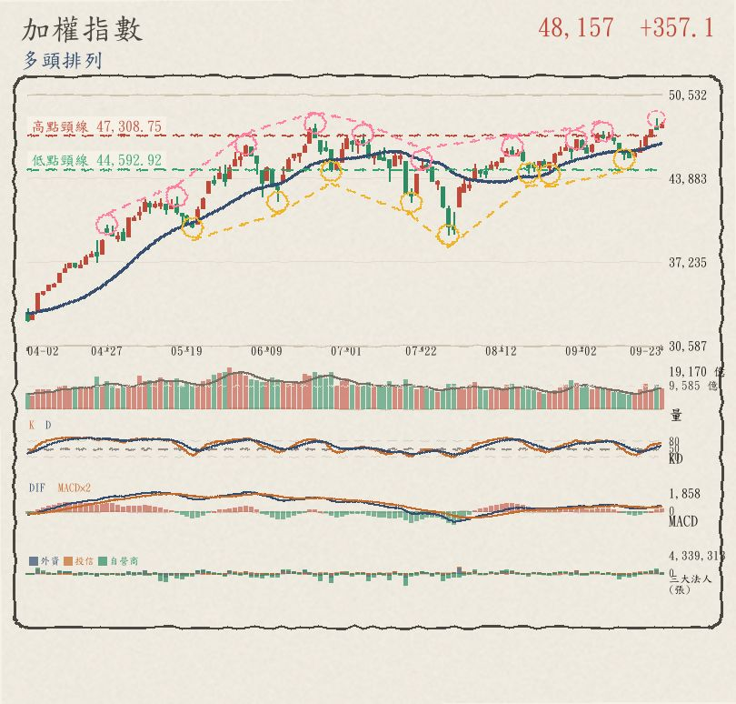
圖說：加權指數日 K（與個股圖相同標記）：黃圈＝轉折低點、粉圈＝轉折高點、虛線小圈＝還沒確認的轉折、藍線＝月線 MA20、水平虛線＝高點／低點頸線。最後一根是資料日當天。
本區塊為公開資料的技術面觀察，不構成投資建議，
不報牌、不預測、不下買賣決策。成交金額為集中市場總成交金額（含 ETF／權證），
與頁首摘要的「上市個股成交金額」口徑不同。標籤是統計，不是評分、也不是推薦。
上市 vs 上櫃（同期快篩）
加權 +0.75% vs 櫃買 -0.34%（方向相反，大小型股背離） → 方向相反（大小型股背離）
（兩個市場分開寫，不合併成一個數字；櫃買為 TPEX 公開資料）
櫃買歷史：TPEX 逐日回補 130 根；來源：櫃買中心 www/zh-tw/indexInfo/sectinx（逐日，官方；OpenAPI tpex_index 只回當月）
（TPEX OpenAPI 只回當月，故逐日回補；歷史不足就不算該條均線並標「資料不足」，不用錯數字）
近 20 個交易日大盤狀態回溯（最新在上）（點開看逐日主狀態／量比／量價象限）
用同一支程式回算最近 20 個交易日（主狀態 S1~S8 與量比 20 皆為當日收盤當時的判定，
不是事後調整）；量比 20 未公布的日子寫「—」。
好條件最多的（前 10）
不好條件最多的（前 10）
好條件（8 項）：站上月線、月線向上、底底高、頭頭高、突破頸線、相對大盤強、外資買超、量價攻擊（收紅＋大量）。
不好條件（8 項）：跌破前低、今日下跌、相對大盤弱、在月線之下、量增下跌（出貨）、外資賣超、月線下彎、收盤跌破前一日低點。
兩邊都是同一組資料（日線結構＋當日收盤量價籌碼）算出來的「符合項目數」，只是方向相反；
條件數不是評分、也不是推薦，不構成投資建議。
上升趨勢：底底高 ＋ 頭頭高（19 上市 15／上櫃 4）
量價攻擊（收紅＋大量）（25 上市 21／上櫃 4）
逐檔分析（70 檔）
剛突破前高 成交金額 568.94 億・全榜第 1 名（上市第 1 名）
好條件 7/8：站上月線、月線向上、頭頭高、突破頸線、相對大盤強、外資買超、量價攻擊（收紅＋大量）
不好條件 0/8：無
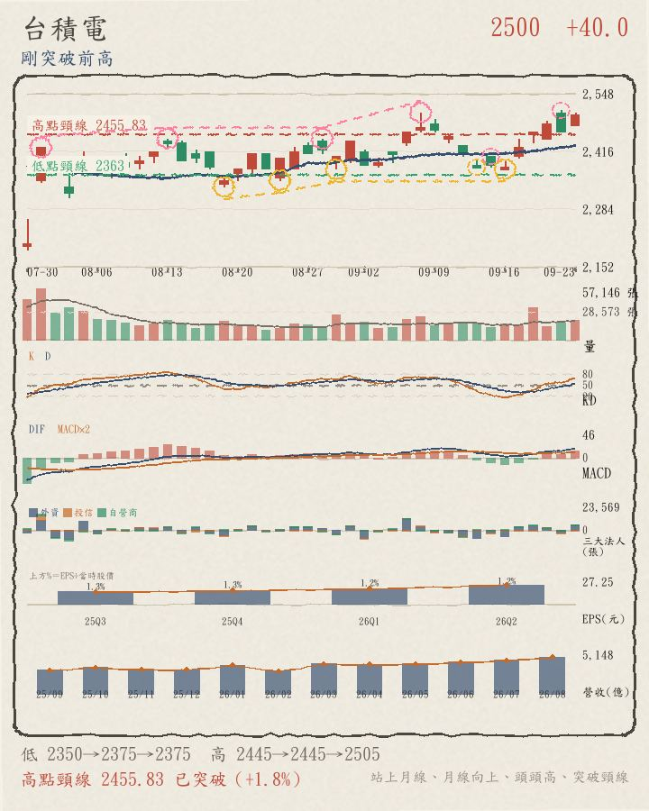
今天帶量收紅、站上月線 2429.25，已站上高點頸線 2455.83，高點還在墊高（但底部沒同步墊高）。
- 月線位置：收盤 2500 在月線 2429.25 之上；5 日線 2465 也在月線之上（短均在上）；月線向上、5 日線向上
- 量能：成交量是 20 日均量的 1.18 倍，比 20 日均量大不少；收紅又量增，量價配合
- 關鍵價位：高點頸線 2455.83 已站上；最近轉折高點 2505（低於 0.2%）；最近轉折低點 2375（高於 5.3%）
- 轉折結構：高點 2445、2445、2505 墊高 0.2%（頭頭高），但低點 2350、2375、2375 沒有同步墊高；還沒確認的轉折低點 09-14 2380；還沒確認的轉折高點 09-15 2405、09-22 2510（圖上虛線小圈）
高點墊高、底部不穩 成交金額 333.89 億・全榜第 2 名（上市第 2 名）
好條件 5/8：站上月線、月線向上、頭頭高、突破頸線、外資買超
不好條件 1/8：相對大盤弱
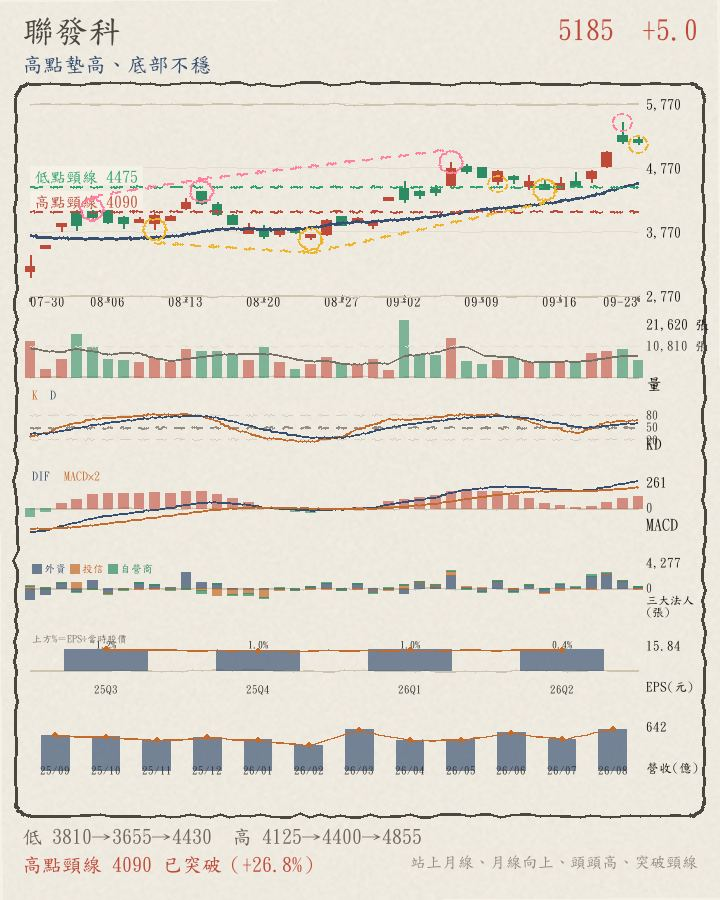
今天收紅、但成交量比平均少、站上月線 4531.25，已站上高點頸線 4090，高點還在墊高（但底部沒同步墊高）。
- 月線位置：收盤 5185 在月線 4531.25 之上；5 日線 4917 也在月線之上（短均在上）；月線向上、5 日線向上
- 量能：成交量是 20 日均量的 0.83 倍，比 20 日均量少很多；收紅但量縮，量價背離
- 關鍵價位：高點頸線 4090 已站上；最近轉折高點 4855（高於 6.8%）；最近轉折低點 4430（高於 17.0%）
- 轉折結構：高點 4125、4400、4855 墊高 17.7%（頭頭高），但低點 3810、3655、4430 沒有同步墊高；還沒確認的轉折低點 09-10 4520、09-23 5140；還沒確認的轉折高點 09-22 5480（圖上虛線小圈）
剛突破前高 成交金額 332.65 億・全榜第 3 名（上市第 3 名）
好條件 3/8：站上月線、月線向上、頭頭高
不好條件 4/8：今日下跌、相對大盤弱、量增下跌（出貨）、外資賣超
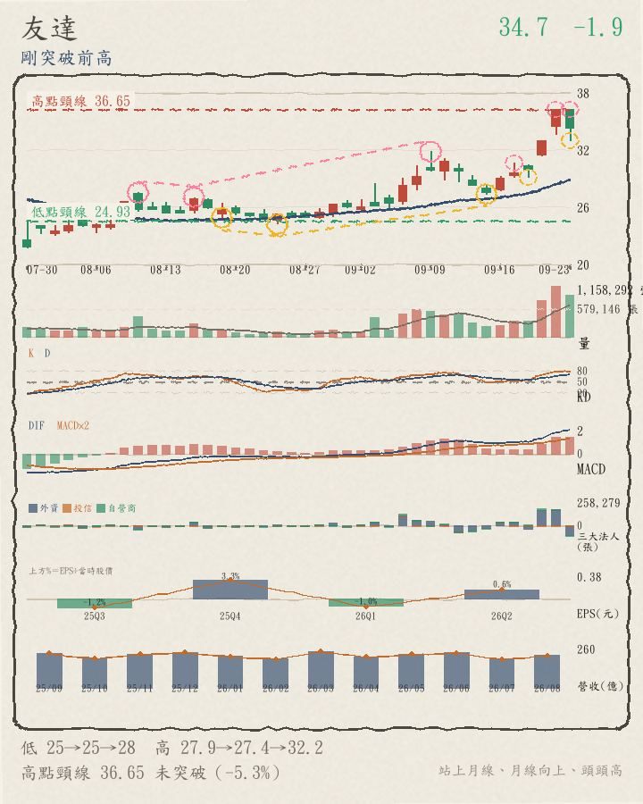
今天帶量收黑、站上月線 29.258，離高點頸線 36.65 還差 5.3%，高點還在墊高（但底部沒同步墊高）。
- 月線位置：收盤 34.7 在月線 29.258 之上；5 日線 33.01 也在月線之上（短均在上）；月線向上、5 日線向上
- 量能：成交量是 20 日均量的 2.53 倍，比 20 日均量大不少；收黑卻量增，量價背離
- 關鍵價位：高點頸線 36.65 還沒突破，差 5.3%；最近轉折高點 32.2（高於 7.8%）；最近轉折低點 27.75（高於 25.0%）
- 轉折結構：高點 27.9、27.4、32.2 墊高 13.8%（頭頭高），但低點 25.25、24.6、27.75 沒有同步墊高；還沒確認的轉折低點 09-18 29.5、09-23 33.4；還沒確認的轉折高點 09-22 36.65、09-23 36.65（圖上虛線小圈）
區間或轉弱 成交金額 325.14 億・全榜第 4 名（上市第 4 名）
好條件 3/8：站上月線、相對大盤強、外資買超
不好條件 1/8：月線下彎
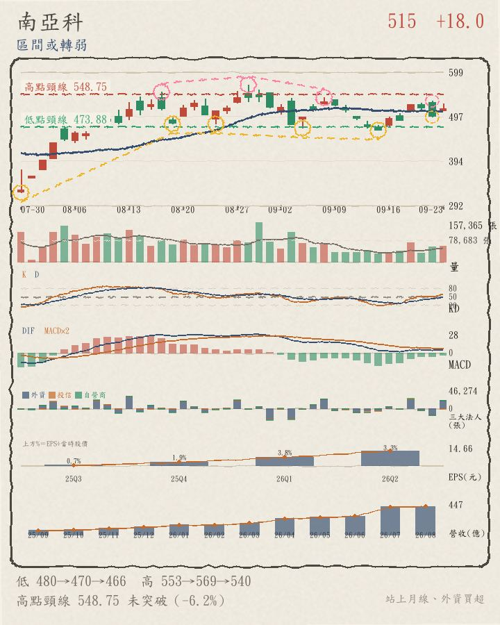
今天收紅、站上月線 509.225，離高點頸線 548.75 還差 6.2%，轉折還沒走出明顯方向。
- 月線位置：收盤 515 在月線 509.225 之上；5 日線 508.2 也在月線之下（短均在下）；月線走平或向下、5 日線向上
- 量能：成交量是 20 日均量的 0.99 倍，跟 20 日均量差不多
- 關鍵價位：高點頸線 548.75 還沒突破，差 6.2%；最近轉折高點 540（低於 4.6%）；最近轉折低點 465.5（高於 10.6%）
- 轉折結構：低點 480、470、465.5 與高點 553、569、540 都沒有明顯遞增，屬於區間震盪或轉弱；還沒確認的轉折低點 09-22 496；還沒確認的轉折高點 09-22 533（圖上虛線小圈）
剛突破前高 成交金額 269 億・全榜第 6 名（上市第 5 名）
好條件 4/8：站上月線、月線向上、頭頭高、外資買超
不好條件 3/8：今日下跌、相對大盤弱、量增下跌（出貨）
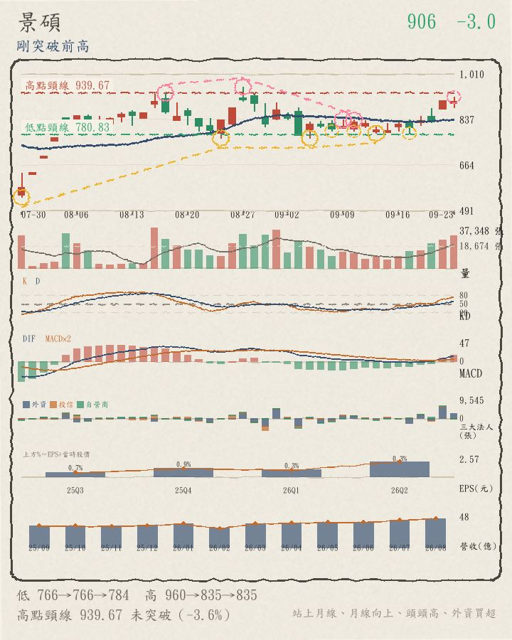
今天帶量收黑、站上月線 835.65，離高點頸線 939.67 還差 3.6%，高點還在墊高（但底部沒同步墊高）。
- 月線位置：收盤 906 在月線 835.65 之上；5 日線 855.8 也在月線之上（短均在上）；月線向上、5 日線向上
- 量能：成交量是 20 日均量的 1.60 倍，比 20 日均量大不少；收黑卻量增，量價背離
- 關鍵價位：高點頸線 939.67 還沒突破，差 3.6%；最近轉折高點 835（高於 8.5%）；最近轉折低點 784（高於 15.6%）
- 轉折結構：高點 960、835、835 墊高 10.4%（頭頭高），但低點 766、766、784 沒有同步墊高；還沒確認的轉折低點 09-10 792、09-17 785；還沒確認的轉折高點 09-23 922（圖上虛線小圈）
剛突破前高 成交金額 266.38 億・全榜第 7 名（上市第 6 名）
好條件 6/8：站上月線、頭頭高、突破頸線、相對大盤強、外資買超、量價攻擊（收紅＋大量）
不好條件 1/8：月線下彎
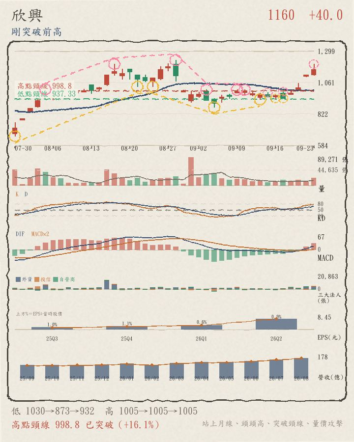
今天帶量收紅、站上月線 1001.4，已站上高點頸線 998.8，高點還在墊高（但底部沒同步墊高）。
- 月線位置：收盤 1160 在月線 1001.4 之上；5 日線 1044.2 也在月線之上（短均在上）；月線走平或向下、5 日線向上
- 量能：成交量是 20 日均量的 1.05 倍，比 20 日均量大一些；收紅又量增，量價配合
- 關鍵價位：高點頸線 998.8 已站上；最近轉折高點 1005（高於 15.4%）；最近轉折低點 932（高於 24.5%）
- 轉折結構：高點 1005、1005、1005 墊高 19.4%（頭頭高），但低點 1030、873、932 沒有同步墊高；還沒確認的轉折低點 09-16 940、09-17 940；還沒確認的轉折高點 09-17 993、09-23 1200（圖上虛線小圈）
區間或轉弱 成交金額 248.23 億・全榜第 8 名（上市第 7 名）
好條件 3/8：站上月線、月線向上、量價攻擊（收紅＋大量）
不好條件 2/8：相對大盤弱、外資賣超
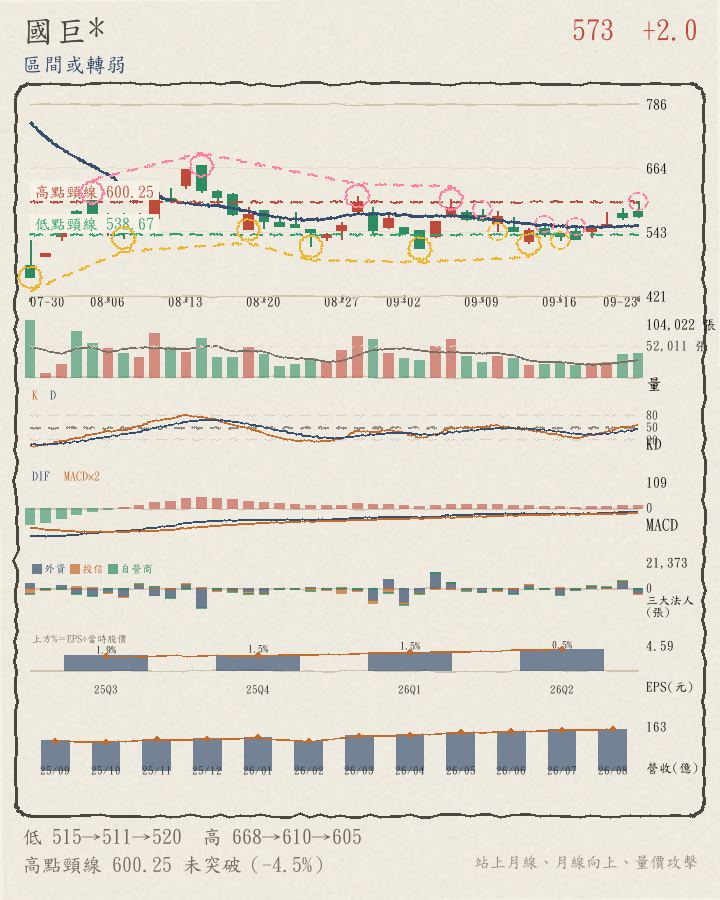
今天帶量收紅、站上月線 555.65，離高點頸線 600.25 還差 4.5%，轉折還沒走出明顯方向。
- 月線位置：收盤 573 在月線 555.65 之上；5 日線 556 也在月線之上（短均在上）；月線向上、5 日線向上
- 量能：成交量是 20 日均量的 1.11 倍，比 20 日均量大一些；收紅又量增，量價配合
- 關鍵價位：高點頸線 600.25 還沒突破，差 4.5%；最近轉折高點 605（低於 5.3%）；最近轉折低點 520（高於 10.2%）
- 轉折結構：低點 515、511、520 與高點 668、610、605 都沒有明顯遞增，屬於區間震盪或轉弱；還沒確認的轉折低點 09-10 543、09-16 526；還沒確認的轉折高點 09-17 553、09-23 601（圖上虛線小圈）
剛突破前高 成交金額 210.05 億・全榜第 9 名（上市第 8 名）
好條件 6/8：站上月線、頭頭高、突破頸線、相對大盤強、外資買超、量價攻擊（收紅＋大量）
不好條件 1/8：月線下彎
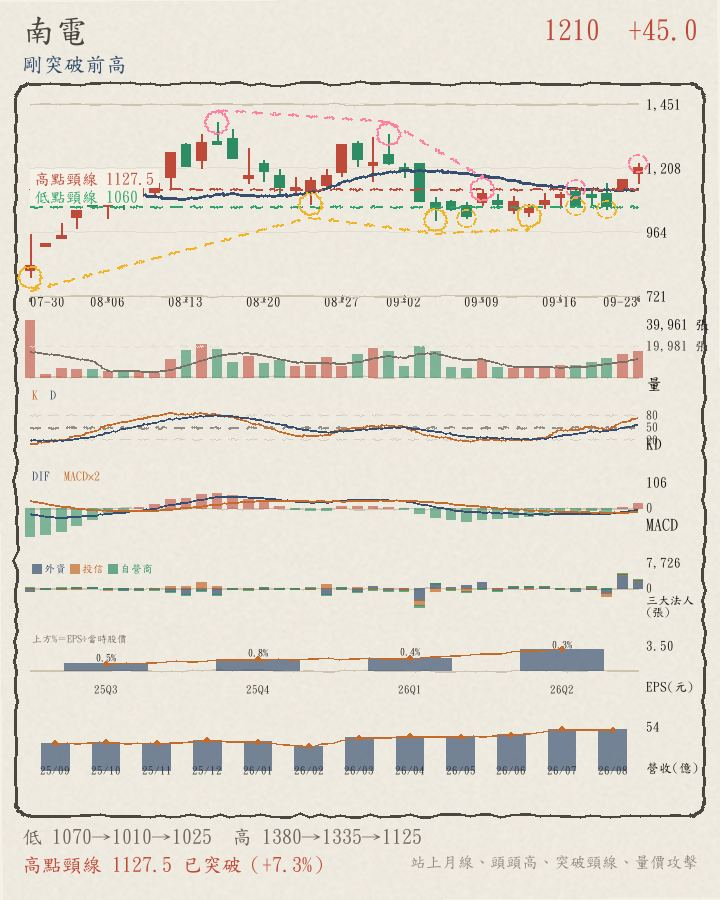
今天帶量收紅、站上月線 1125.25，已站上高點頸線 1127.5，高點還在墊高（但底部沒同步墊高）。
- 月線位置：收盤 1210 在月線 1125.25 之上；5 日線 1120 也在月線之下（短均在下）；月線走平或向下、5 日線向上
- 量能：成交量是 20 日均量的 1.54 倍，比 20 日均量大不少；收紅又量增，量價配合
- 關鍵價位：高點頸線 1127.5 已站上；最近轉折高點 1125（高於 7.6%）；最近轉折低點 1025（高於 18.0%）
- 轉折結構：高點 1380、1335、1125 墊高 8.9%（頭頭高），但低點 1070、1010、1025 沒有同步墊高；還沒確認的轉折低點 09-17 1060、09-21 1050；還沒確認的轉折高點 09-17 1130、09-23 1225（圖上虛線小圈）
上升趨勢（底底高＋頭頭高） 成交金額 199.82 億・全榜第 10 名（上市第 9 名）
好條件 5/8：站上月線、月線向上、底底高、頭頭高、突破頸線
不好條件 2/8：相對大盤弱、外資賣超
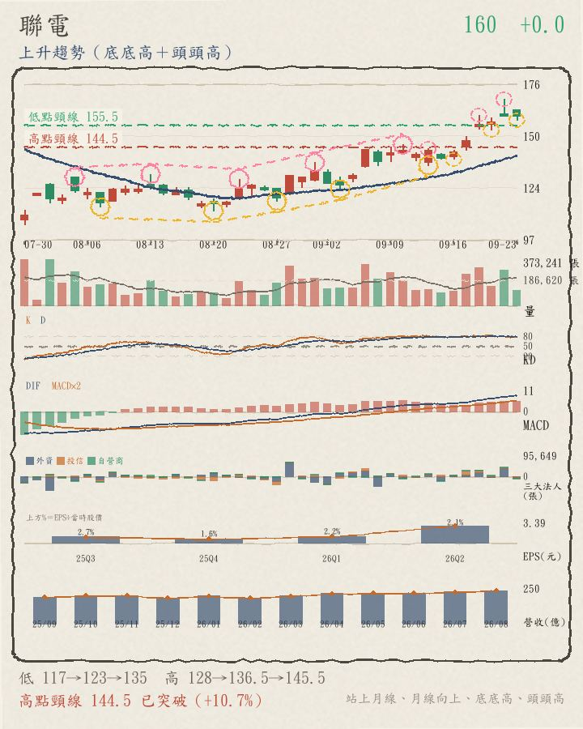
今天收黑、成交量也比平均少、站上月線 139.95，已站上高點頸線 144.5，轉折結構仍是底底高＋頭頭高。
- 月線位置：收盤 160 在月線 139.95 之上；5 日線 156.1 也在月線之上（短均在上）；月線向上、5 日線向上
- 量能：成交量是 20 日均量的 0.64 倍，比 20 日均量少很多
- 關鍵價位：高點頸線 144.5 已站上；最近轉折高點 145.5（高於 10.0%）；最近轉折低點 135（高於 18.5%）
- 轉折結構：低點 117、123、135 一路墊高 15.4%、高點 128、136.5、145.5 也一路墊高 13.7%，是底底高＋頭頭高；還沒確認的轉折低點 09-21 153、09-23 158；還沒確認的轉折高點 09-18 160.5、09-22 168.5（圖上虛線小圈）
上升趨勢（底底高＋頭頭高） 成交金額 188.09 億・全榜第 11 名（上市第 10 名）
好條件 3/8：月線向上、底底高、頭頭高
不好條件 6/8：今日下跌、相對大盤弱、在月線之下、量增下跌（出貨）、外資賣超、收盤跌破前一日低點
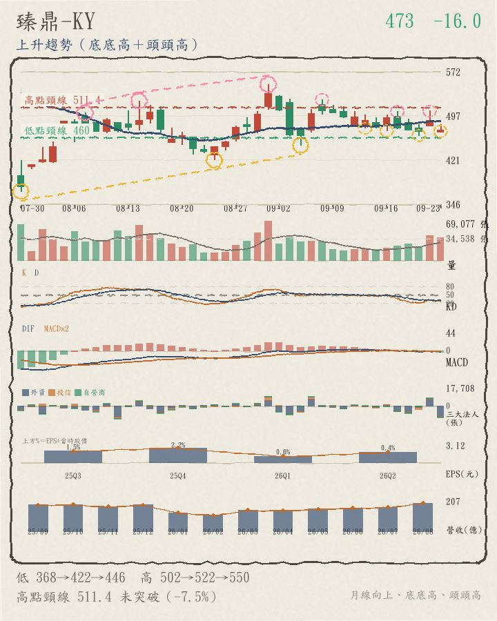
今天帶量收黑、跌破月線 488.275，離高點頸線 511.4 還差 7.5%，轉折結構仍是底底高＋頭頭高。
- 月線位置：收盤 473 在月線 488.275 之下；5 日線 476.2 也在月線之下（短均在下）；月線向上、5 日線走平或向下
- 量能：成交量是 20 日均量的 1.34 倍，比 20 日均量大不少；收黑卻量增，量價背離
- 關鍵價位：高點頸線 511.4 還沒突破，差 7.5%；最近轉折高點 550（低於 14.0%）；最近轉折低點 446.5（高於 5.9%）
- 轉折結構：低點 368、421.5、446.5 一路墊高 21.3%、高點 502、522、550 也一路墊高 9.6%，是底底高＋頭頭高；還沒確認的轉折低點 09-21 463.5、09-23 470；還沒確認的轉折高點 09-17 504、09-22 505（圖上虛線小圈）
剛突破前高 成交金額 185.56 億・全榜第 12 名（上市第 11 名）
好條件 3/8：站上月線、月線向上、頭頭高
不好條件 2/8：相對大盤弱、外資賣超
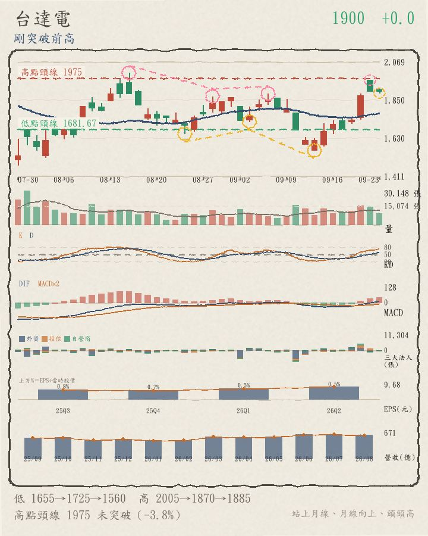
今天收黑、成交量也比平均少、站上月線 1773，離高點頸線 1975 還差 3.8%，高點還在墊高（但底部沒同步墊高）。
- 月線位置：收盤 1900 在月線 1773 之上；5 日線 1819 也在月線之上（短均在上）；月線向上、5 日線向上
- 量能：成交量是 20 日均量的 0.91 倍，比 20 日均量少一些
- 關鍵價位：高點頸線 1975 還沒突破，差 3.8%；最近轉折高點 1885（高於 0.8%）；最近轉折低點 1560（高於 21.8%）
- 轉折結構：高點 2005、1870、1885 墊高 4.2%（頭頭高），但低點 1655、1725、1560 沒有同步墊高；還沒確認的轉折低點 09-23 1890；還沒確認的轉折高點 09-22 1965（圖上虛線小圈）
上升趨勢（底底高＋頭頭高） 成交金額 176.64 億・全榜第 13 名（上市第 12 名）
好條件 7/8：站上月線、月線向上、底底高、頭頭高、突破頸線、外資買超、量價攻擊（收紅＋大量）
不好條件 1/8：相對大盤弱
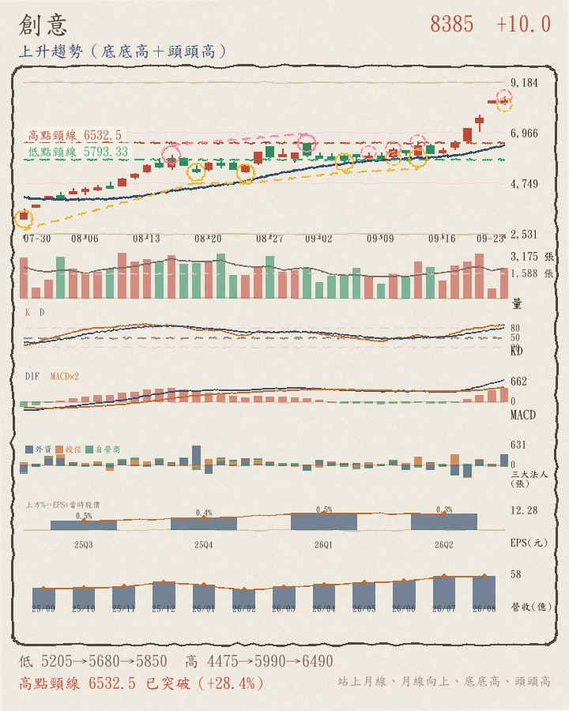
今天帶量收紅、站上月線 6416.5，已站上高點頸線 6532.5，轉折結構仍是底底高＋頭頭高。
- 月線位置：收盤 8385 在月線 6416.5 之上；5 日線 7605 也在月線之上（短均在上）；月線向上、5 日線向上
- 量能：成交量是 20 日均量的 1.14 倍，比 20 日均量大一些；收紅又量增，量價配合
- 關鍵價位：高點頸線 6532.5 已站上；最近轉折高點 6490（高於 29.2%）；最近轉折低點 5850（高於 43.3%）
- 轉折結構：低點 5205、5680、5850 一路墊高 12.4%、高點 4475、5990、6490 也一路墊高 45.0%，是底底高＋頭頭高；還沒確認的轉折低點 09-10 5850、09-23 8200；還沒確認的轉折高點 09-14 6575、09-23 8540（圖上虛線小圈）
剛突破前高 成交金額 155.21 億・全榜第 15 名（上市第 13 名）
好條件 6/8：站上月線、月線向上、頭頭高、突破頸線、相對大盤強、量價攻擊（收紅＋大量）
不好條件 1/8：外資賣超
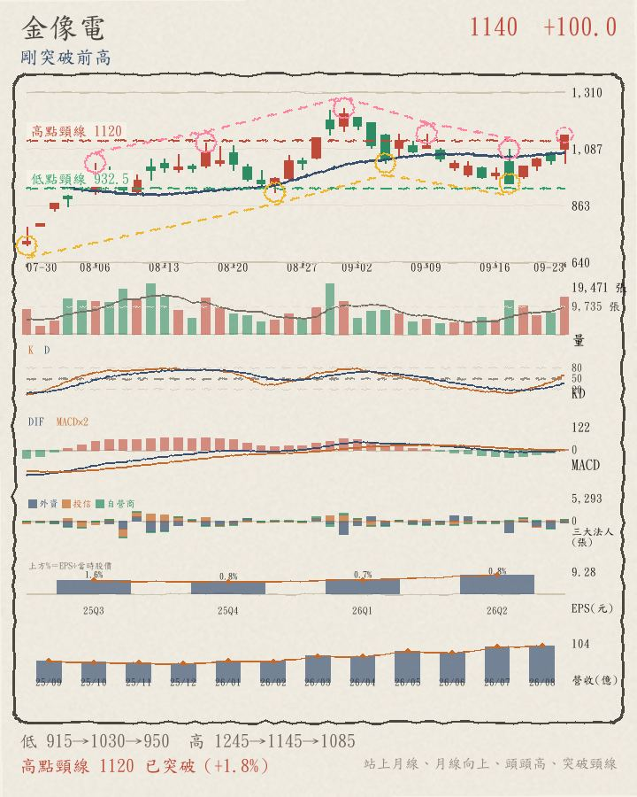
今天帶量收紅、站上月線 1070.95，已站上高點頸線 1120，高點還在墊高（但底部沒同步墊高）。
- 月線位置：收盤 1140 在月線 1070.95 之上；5 日線 1039 也在月線之下（短均在下）；月線向上、5 日線向上
- 量能：成交量是 20 日均量的 1.76 倍，比 20 日均量大不少；收紅又量增，量價配合
- 關鍵價位：高點頸線 1120 已站上；最近轉折高點 1085（高於 5.1%）；最近轉折低點 950（高於 20.0%）
- 轉折結構：高點 1245、1145、1085 墊高 5.1%（頭頭高），但低點 915、1030、950 沒有同步墊高；還沒確認的轉折高點 09-23 1140（圖上虛線小圈）
剛突破前高 成交金額 127.9 億・全榜第 18 名（上市第 14 名）
好條件 7/8：站上月線、月線向上、頭頭高、突破頸線、相對大盤強、外資買超、量價攻擊（收紅＋大量）
不好條件 0/8：無
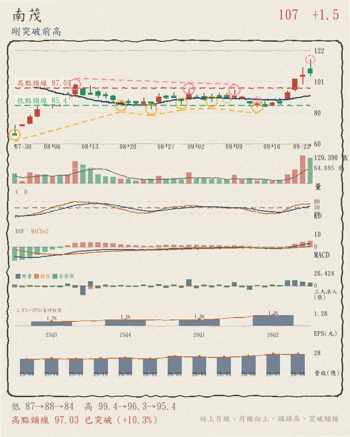
今天帶量收紅、站上月線 91.875，已站上高點頸線 97.03，高點還在墊高（但底部沒同步墊高）。
- 月線位置：收盤 107 在月線 91.875 之上；5 日線 99.24 也在月線之上（短均在上）；月線向上、5 日線向上
- 量能：成交量是 20 日均量的 4.04 倍，比 20 日均量大不少；收紅又量增，量價配合
- 關鍵價位：高點頸線 97.03 已站上；最近轉折高點 95.4（高於 12.2%）；最近轉折低點 84.3（高於 26.9%）
- 轉折結構：高點 99.4、96.3、95.4 墊高 21.6%（頭頭高），但低點 86.6、87.9、84.3 沒有同步墊高；還沒確認的轉折低點 09-08 89.7；還沒確認的轉折高點 09-14 88.2、09-23 116（圖上虛線小圈）
底部墊高、突破前高 成交金額 125.1 億・全榜第 19 名（上市第 15 名）
好條件 3/8：月線向上、底底高、頭頭高
不好條件 5/8：今日下跌、相對大盤弱、在月線之下、外資賣超、收盤跌破前一日低點
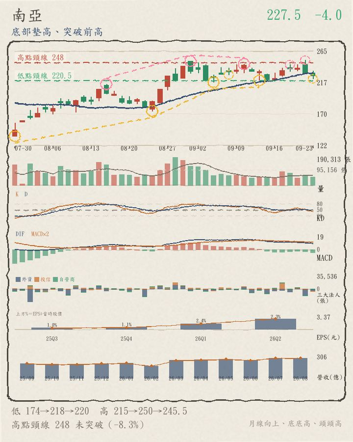
今天收黑、成交量也比平均少、跌破月線 232.075，離高點頸線 248 還差 8.3%，轉折結構仍是底底高＋頭頭高。
- 月線位置：收盤 227.5 在月線 232.075 之下；5 日線 234.5 也在月線之上（短均在上）；月線向上、5 日線向上
- 量能：成交量是 20 日均量的 0.61 倍，比 20 日均量少很多
- 關鍵價位：高點頸線 248 還沒突破，差 8.3%；最近轉折高點 245.5（低於 7.3%）；最近轉折低點 220.5（高於 3.2%）
- 轉折結構：低點 174、218、220.5 一路墊高 26.7%、高點 215、250、245.5 也一路墊高 2.4%，是底底高＋頭頭高；還沒確認的轉折低點 09-08 229、09-23 223；還沒確認的轉折高點 09-18 245、09-22 251.5（圖上虛線小圈）
區間或轉弱 成交金額 123.22 億・全榜第 20 名（上市第 16 名）
好條件 2/8：相對大盤強、外資買超
不好條件 2/8：在月線之下、月線下彎
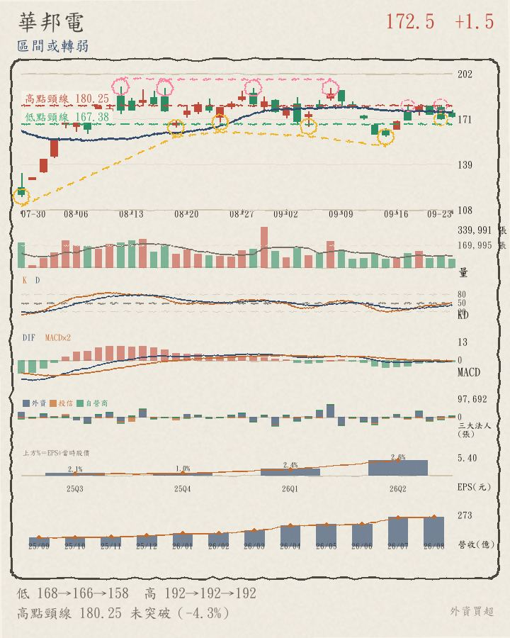
今天收紅、但成交量比平均少、跌破月線 175.275，離高點頸線 180.25 還差 4.3%，轉折還沒走出明顯方向。
- 月線位置：收盤 172.5 在月線 175.275 之下；5 日線 173.4 也在月線之下（短均在下）；月線走平或向下、5 日線向上
- 量能：成交量是 20 日均量的 0.57 倍，比 20 日均量少很多；收紅但量縮，量價背離
- 關鍵價位：高點頸線 180.25 還沒突破，差 4.3%；最近轉折高點 192（低於 10.2%）；最近轉折低點 158.5（高於 8.8%）
- 轉折結構：低點 168.5、165.5、158.5 與高點 192、192、192 都沒有明顯遞增，屬於區間震盪或轉弱；還沒確認的轉折低點 09-22 170.5；還沒確認的轉折高點 09-17 180、09-22 180.5（圖上虛線小圈）
區間或轉弱 成交金額 122.54 億・全榜第 21 名（上市第 17 名）
好條件 2/8：相對大盤強、量價攻擊（收紅＋大量）
不好條件 3/8：在月線之下、外資賣超、月線下彎
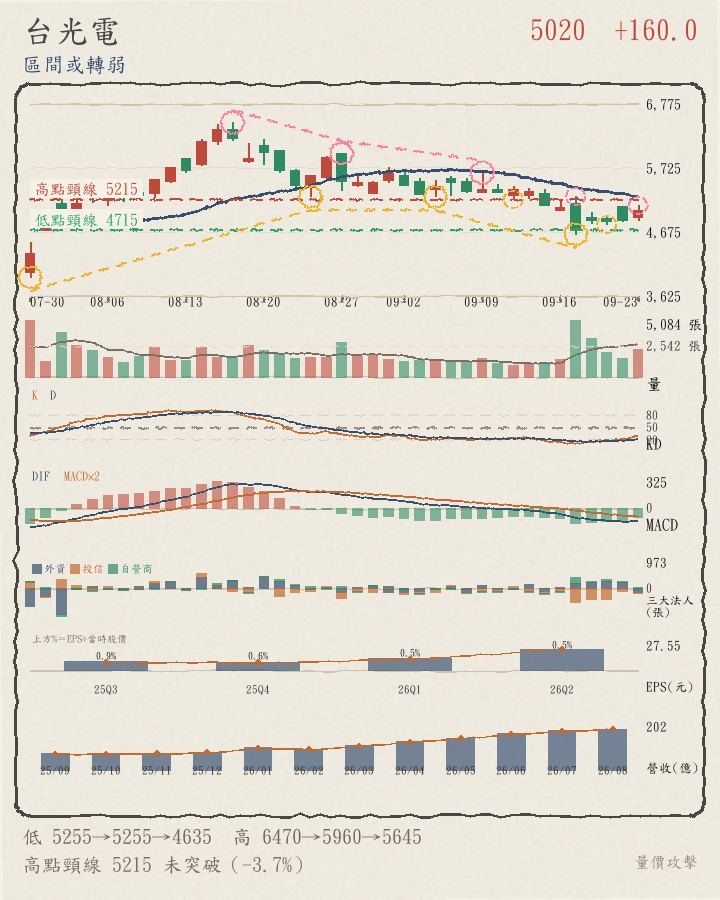
今天帶量收紅、跌破月線 5256，離高點頸線 5215 還差 3.7%，轉折還沒走出明顯方向。
- 月線位置：收盤 5020 在月線 5256 之下；5 日線 4872 也在月線之下（短均在下）；月線走平或向下、5 日線走平或向下
- 量能：成交量是 20 日均量的 1.30 倍，比 20 日均量大不少；收紅又量增，量價配合
- 關鍵價位：高點頸線 5215 還沒突破，差 3.7%；最近轉折高點 5645（低於 11.1%）；最近轉折低點 4635（高於 8.3%）
- 轉折結構：低點 5255、5255、4635 與高點 6470、5960、5645 都沒有明顯遞增，屬於區間震盪或轉弱；還沒確認的轉折低點 09-11 5210、09-21 4795；還沒確認的轉折高點 09-17 5255、09-23 5110（圖上虛線小圈）
剛突破前高 成交金額 117.2 億・全榜第 22 名（上市第 18 名）
好條件 4/8：站上月線、月線向上、頭頭高、突破頸線
不好條件 5/8：今日下跌、相對大盤弱、量增下跌（出貨）、外資賣超、收盤跌破前一日低點
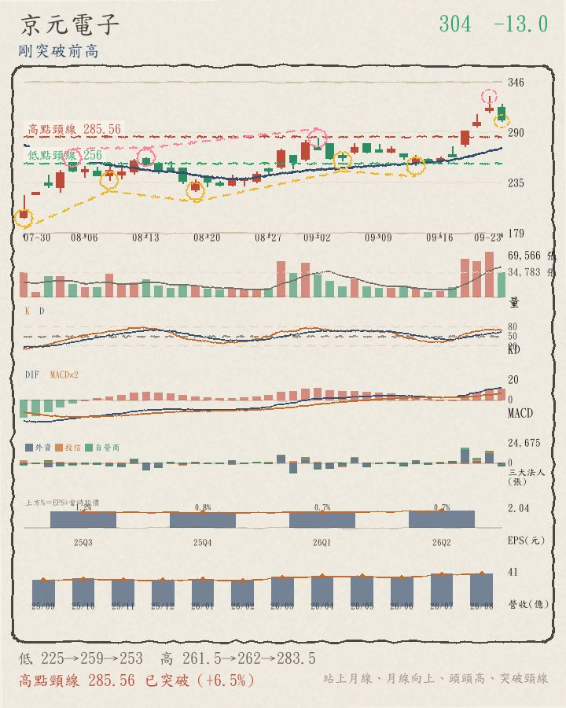
今天帶量收黑、站上月線 272.6，已站上高點頸線 285.56，高點還在墊高（但底部沒同步墊高）。
- 月線位置：收盤 304 在月線 272.6 之上；5 日線 295.8 也在月線之上（短均在上）；月線向上、5 日線向上
- 量能：成交量是 20 日均量的 1.35 倍，比 20 日均量大不少；收黑卻量增，量價背離
- 關鍵價位：高點頸線 285.56 已站上；最近轉折高點 283.5（高於 7.2%）；最近轉折低點 253（高於 20.2%）
- 轉折結構：高點 261.5、262、283.5 墊高 16.4%（頭頭高），但低點 225、259、253 沒有同步墊高；還沒確認的轉折低點 09-23 302.5；還沒確認的轉折高點 09-22 330（圖上虛線小圈）
剛突破前高 成交金額 110.35 億・全榜第 24 名（上市第 19 名）
好條件 3/8：站上月線、月線向上、頭頭高
不好條件 5/8：今日下跌、相對大盤弱、量增下跌（出貨）、外資賣超、收盤跌破前一日低點
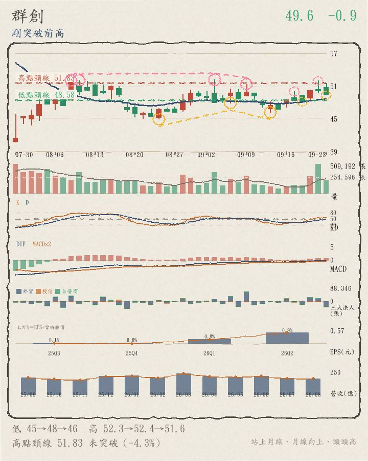
今天帶量收黑、站上月線 48.797，離高點頸線 51.83 還差 4.3%，高點還在墊高（但底部沒同步墊高）。
- 月線位置：收盤 49.6 在月線 48.797 之上；5 日線 49.45 也在月線之上（短均在上）；月線向上、5 日線向上
- 量能：成交量是 20 日均量的 1.10 倍，比 20 日均量大一些；收黑卻量增，量價背離
- 關鍵價位：高點頸線 51.83 還沒突破，差 4.3%；最近轉折高點 51.6（低於 3.9%）；最近轉折低點 46.25（高於 7.2%）
- 轉折結構：高點 52.3、52.4、51.6 墊高 1.2%（頭頭高），但低點 44.95、48、46.25 沒有同步墊高；還沒確認的轉折低點 09-18 48.25、09-23 49.5；還沒確認的轉折高點 09-17 50.2、09-22 52.2（圖上虛線小圈）
底部墊高、突破前高 成交金額 107.13 億・全榜第 25 名（上市第 20 名）
好條件 5/8：站上月線、月線向上、底底高、頭頭高、外資買超
不好條件 1/8：相對大盤弱
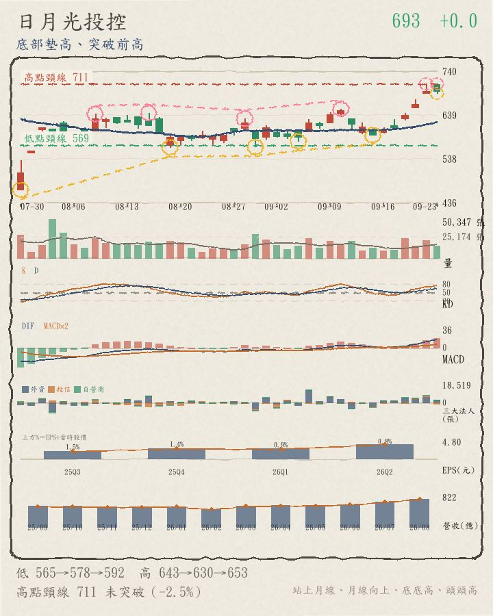
今天收黑、成交量也比平均少、站上月線 622.15，離高點頸線 711 還差 2.5%，轉折結構仍是底底高＋頭頭高。
- 月線位置：收盤 693 在月線 622.15 之上；5 日線 660.2 也在月線之上（短均在上）；月線向上、5 日線向上
- 量能：成交量是 20 日均量的 0.90 倍，比 20 日均量少一些
- 關鍵價位：高點頸線 711 還沒突破，差 2.5%；最近轉折高點 653（高於 6.1%）；最近轉折低點 592（高於 17.1%）
- 轉折結構：低點 565、578、592 一路墊高 4.8%、高點 643、630、653 也一路墊高 8.9%，是底底高＋頭頭高；還沒確認的轉折低點 09-23 689；還沒確認的轉折高點 09-22 711、09-23 711（圖上虛線小圈）
高點墊高、底部不穩 成交金額 105.81 億・全榜第 26 名（上市第 21 名）
好條件 2/8：月線向上、頭頭高
不好條件 5/8：今日下跌、相對大盤弱、在月線之下、外資賣超、收盤跌破前一日低點
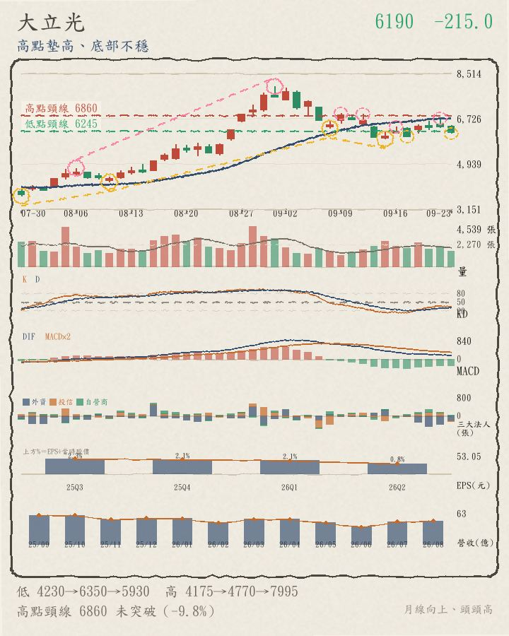
今天收黑、成交量也比平均少、跌破月線 6735，離高點頸線 6860 還差 9.8%，高點還在墊高（但底部沒同步墊高）。
- 月線位置：收盤 6190 在月線 6735 之下；5 日線 6289 也在月線之下（短均在下）；月線向上、5 日線走平或向下
- 量能：成交量是 20 日均量的 0.74 倍，比 20 日均量少很多
- 關鍵價位：高點頸線 6860 還沒突破，差 9.8%；最近轉折高點 7995（低於 22.6%）；最近轉折低點 5930（高於 4.4%）
- 轉折結構：高點 4175、4770、7995 墊高 91.5%（頭頭高），但低點 4230、6350、5930 沒有同步墊高；還沒確認的轉折低點 09-17 6020、09-23 6140；還沒確認的轉折高點 09-16 6415、09-22 6750（圖上虛線小圈）
剛突破前高 成交金額 95.58 億・全榜第 28 名（上市第 22 名）
好條件 7/8：站上月線、月線向上、頭頭高、突破頸線、相對大盤強、外資買超、量價攻擊（收紅＋大量）
不好條件 0/8：無
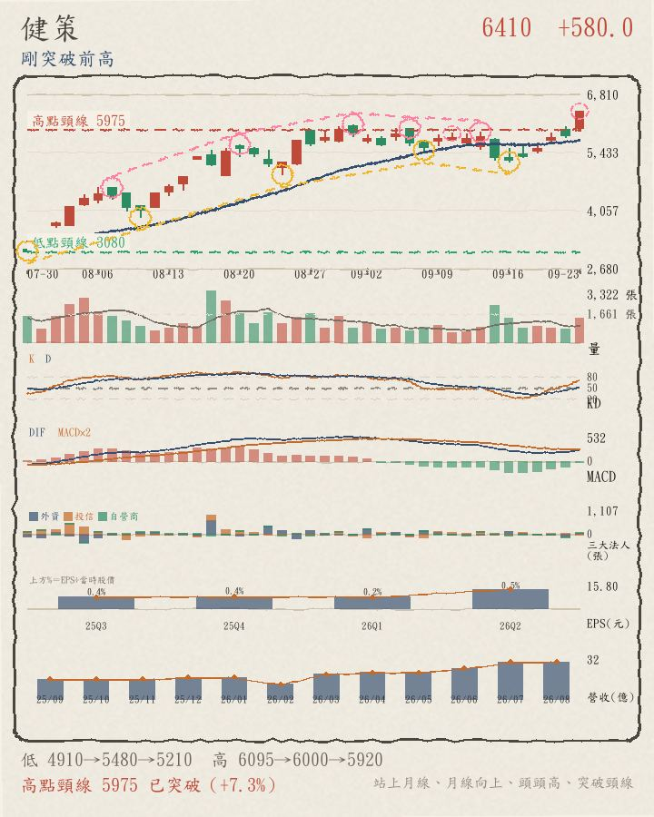
今天帶量收紅、站上月線 5718.25，已站上高點頸線 5975，高點還在墊高（但底部沒同步墊高）。
- 月線位置：收盤 6410 在月線 5718.25 之上；5 日線 5782 也在月線之上（短均在上）；月線向上、5 日線向上
- 量能：成交量是 20 日均量的 1.36 倍，比 20 日均量大不少；收紅又量增，量價配合
- 關鍵價位：高點頸線 5975 已站上；最近轉折高點 5920（高於 8.3%）；最近轉折低點 5210（高於 23.0%）
- 轉折結構：高點 6095、6000、5920 墊高 8.3%（頭頭高），但低點 4910、5480、5210 沒有同步墊高；還沒確認的轉折高點 09-10 5885、09-23 6410（圖上虛線小圈）
高點墊高、底部不穩 成交金額 93.2 億・全榜第 30 名（上市第 23 名）
好條件 5/8：站上月線、月線向上、頭頭高、相對大盤強、外資買超
不好條件 0/8：無
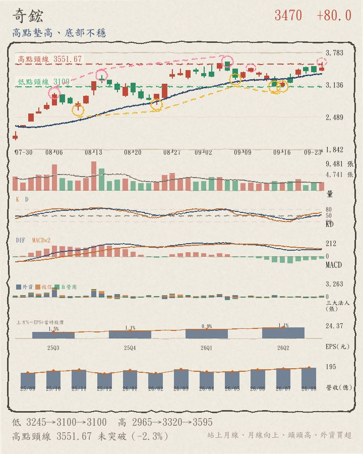
今天收紅、但成交量比平均少、站上月線 3356，離高點頸線 3551.67 還差 2.3%，高點還在墊高（但底部沒同步墊高）。
- 月線位置：收盤 3470 在月線 3356 之上；5 日線 3378 也在月線之上（短均在上）；月線向上、5 日線向上
- 量能：成交量是 20 日均量的 0.83 倍，比 20 日均量少很多；收紅但量縮，量價背離
- 關鍵價位：高點頸線 3551.67 還沒突破，差 2.3%；最近轉折高點 3595（低於 3.5%）；最近轉折低點 3100（高於 11.9%）
- 轉折結構：高點 2965、3320、3595 墊高 21.2%（頭頭高），但低點 3245、3100、3100 沒有同步墊高；還沒確認的轉折高點 09-10 3470、09-23 3590（圖上虛線小圈）
區間或轉弱 成交金額 91.54 億・全榜第 31 名（上市第 24 名）
好條件 6/8：站上月線、月線向上、突破頸線、相對大盤強、外資買超、量價攻擊（收紅＋大量）
不好條件 0/8：無
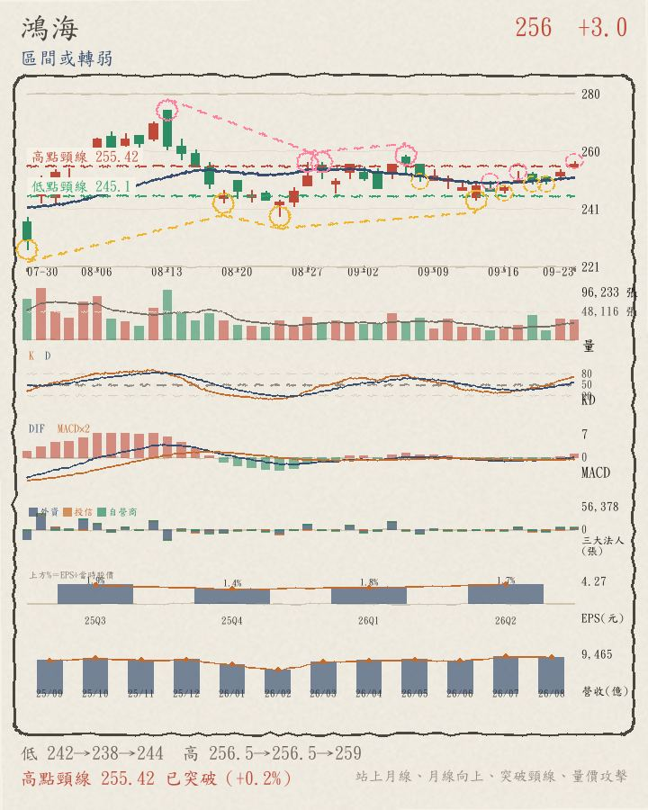
今天帶量收紅、站上月線 251.35，已站上高點頸線 255.42，轉折還沒走出明顯方向。
- 月線位置：收盤 256 在月線 251.35 之上；5 日線 252 也在月線之上（短均在上）；月線向上、5 日線向上
- 量能：成交量是 20 日均量的 1.20 倍，比 20 日均量大不少；收紅又量增，量價配合
- 關鍵價位：高點頸線 255.42 已站上；最近轉折高點 259（低於 1.2%）；最近轉折低點 243.5（高於 5.1%）
- 轉折結構：低點 242.5、238、243.5 與高點 256.5、256.5、259 都沒有明顯遞增，屬於區間震盪或轉弱；還沒確認的轉折低點 09-18 249、09-21 249；還沒確認的轉折高點 09-17 253.5、09-23 257（圖上虛線小圈）
底部墊高、突破前高 成交金額 90.59 億・全榜第 32 名（上市第 25 名）
好條件 5/8：站上月線、月線向上、底底高、頭頭高、突破頸線
不好條件 4/8：今日下跌、相對大盤弱、量增下跌（出貨）、外資賣超
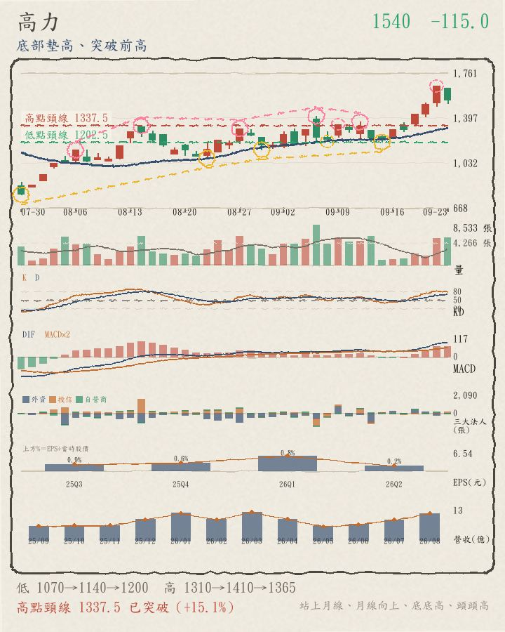
今天帶量收黑、站上月線 1315，已站上高點頸線 1337.5，轉折結構仍是底底高＋頭頭高。
- 月線位置：收盤 1540 在月線 1315 之上；5 日線 1486 也在月線之上（短均在上）；月線向上、5 日線向上
- 量能：成交量是 20 日均量的 1.43 倍，比 20 日均量大不少；收黑卻量增，量價背離
- 關鍵價位：高點頸線 1337.5 已站上；最近轉折高點 1365（高於 12.8%）；最近轉折低點 1200（高於 28.3%）
- 轉折結構：低點 1070、1140、1200 一路墊高 12.1%、高點 1310、1410、1365 也一路墊高 21.2%，是底底高＋頭頭高；還沒確認的轉折低點 09-08 1205；還沒確認的轉折高點 09-09 1345、09-22 1655（圖上虛線小圈）
高點墊高、底部不穩 成交金額 86.96 億・全榜第 33 名（上市第 26 名）
好條件 5/8：站上月線、月線向上、頭頭高、相對大盤強、外資買超
不好條件 0/8：無
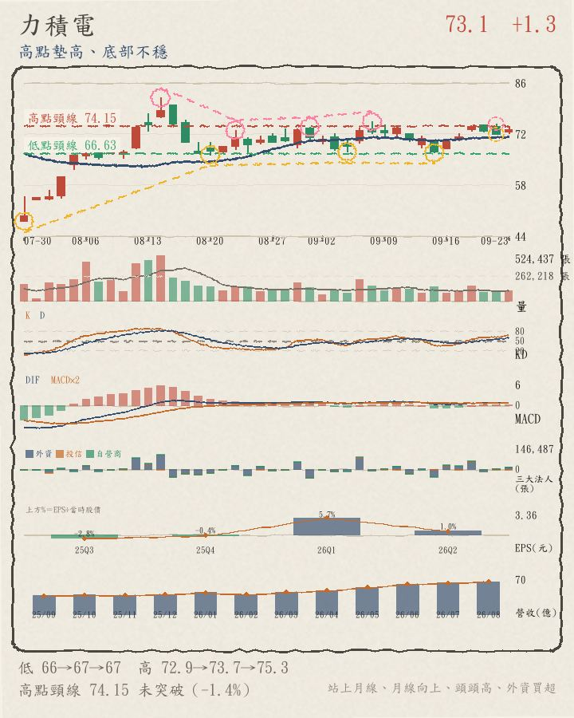
今天收紅、但成交量比平均少、站上月線 71.115，離高點頸線 74.15 還差 1.4%，高點還在墊高（但底部沒同步墊高）。
- 月線位置：收盤 73.1 在月線 71.115 之上；5 日線 72.56 也在月線之上（短均在上）；月線向上、5 日線向上
- 量能：成交量是 20 日均量的 0.91 倍，比 20 日均量少一些；收紅但量縮，量價背離
- 關鍵價位：高點頸線 74.15 還沒突破，差 1.4%；最近轉折高點 75.3（低於 2.9%）；最近轉折低點 66.7（高於 9.6%）
- 轉折結構：高點 72.9、73.7、75.3 墊高 3.3%（頭頭高），但低點 66.2、67、66.7 沒有同步墊高；還沒確認的轉折低點 09-22 71.8；還沒確認的轉折高點 09-22 74.7（圖上虛線小圈）
區間或轉弱 成交金額 84.63 億・全榜第 35 名（上市第 27 名）
好條件 4/8：站上月線、月線向上、相對大盤強、量價攻擊（收紅＋大量）
不好條件 1/8：外資賣超
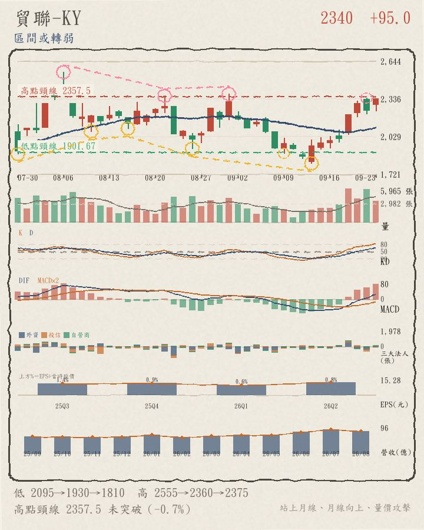
今天帶量收紅、站上月線 2101.75，離高點頸線 2357.5 還差 0.7%，轉折還沒走出明顯方向。
- 月線位置：收盤 2340 在月線 2101.75 之上；5 日線 2221 也在月線之上（短均在上）；月線向上、5 日線向上
- 量能：成交量是 20 日均量的 1.20 倍，比 20 日均量大不少；收紅又量增，量價配合
- 關鍵價位：高點頸線 2357.5 還沒突破，差 0.7%；最近轉折高點 2375（低於 1.5%）；最近轉折低點 1810（高於 29.3%）
- 轉折結構：低點 2095、1930、1810 與高點 2555、2360、2375 都沒有明顯遞增，屬於區間震盪或轉弱；還沒確認的轉折低點 09-09 1890；還沒確認的轉折高點 09-22 2345（圖上虛線小圈）
區間或轉弱 成交金額 78.41 億・全榜第 37 名（上市第 28 名）
好條件 0/8：無
不好條件 6/8：今日下跌、相對大盤弱、在月線之下、量增下跌（出貨）、外資賣超、月線下彎
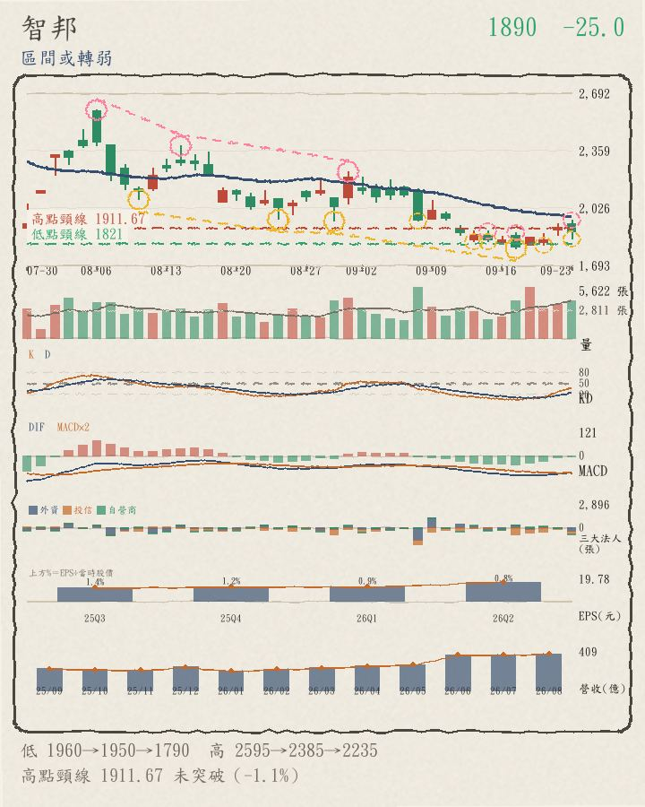
今天帶量收黑、跌破月線 1978，離高點頸線 1911.67 還差 1.1%，轉折還沒走出明顯方向。
- 月線位置：收盤 1890 在月線 1978 之下；5 日線 1860 也在月線之下（短均在下）；月線走平或向下、5 日線走平或向下
- 量能：成交量是 20 日均量的 1.27 倍，比 20 日均量大不少；收黑卻量增，量價背離
- 關鍵價位：高點頸線 1911.67 還沒突破，差 1.1%；最近轉折高點 2235（低於 15.4%）；最近轉折低點 1790（高於 5.6%）
- 轉折結構：低點 1960、1950、1790 與高點 2595、2385、2235 都沒有明顯遞增，屬於區間震盪或轉弱；還沒確認的轉折低點 09-21 1810、09-23 1845；還沒確認的轉折高點 09-17 1885、09-23 1955（圖上虛線小圈）
高點墊高、底部不穩 成交金額 69.35 億・全榜第 40 名（上市第 29 名）
好條件 5/8：站上月線、月線向上、頭頭高、突破頸線、相對大盤強
不好條件 1/8：外資賣超
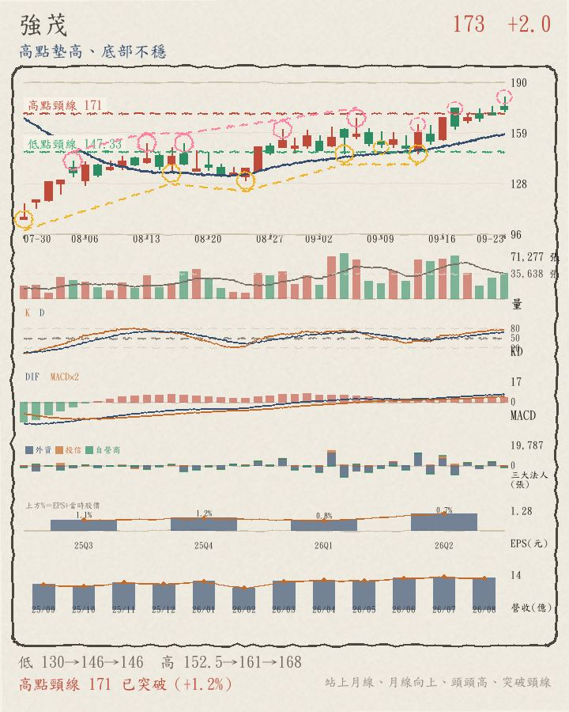
今天收紅、但成交量比平均少、站上月線 158，已站上高點頸線 171，高點還在墊高（但底部沒同步墊高）。
- 月線位置：收盤 173 在月線 158 之上；5 日線 168.7 也在月線之上（短均在上）；月線向上、5 日線向上
- 量能：成交量是 20 日均量的 0.93 倍，比 20 日均量少一些；收紅但量縮，量價背離
- 關鍵價位：高點頸線 171 已站上；最近轉折高點 168（高於 3.0%）；最近轉折低點 146（高於 18.5%）
- 轉折結構：高點 152.5、161、168 墊高 10.2%（頭頭高），但低點 129.5、146、146 沒有同步墊高；還沒確認的轉折低點 09-09 150；還沒確認的轉折高點 09-17 174、09-23 181（圖上虛線小圈）
區間或轉弱 成交金額 67.44 億・全榜第 41 名（上市第 30 名）
好條件 2/8：相對大盤強、外資買超
不好條件 2/8：在月線之下、月線下彎
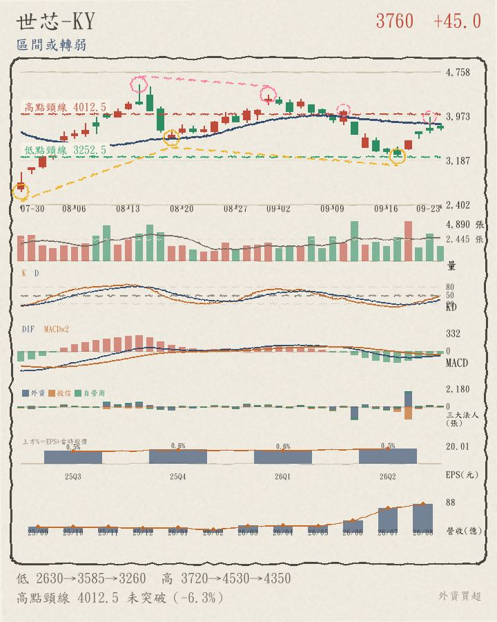
今天收紅、但成交量比平均少、跌破月線 3835，離高點頸線 4012.5 還差 6.3%，轉折還沒走出明顯方向。
- 月線位置：收盤 3760 在月線 3835 之下；5 日線 3595 也在月線之下（短均在下）；月線走平或向下、5 日線走平或向下
- 量能：成交量是 20 日均量的 0.75 倍，比 20 日均量少很多；收紅但量縮，量價背離
- 關鍵價位：高點頸線 4012.5 還沒突破，差 6.3%；最近轉折高點 4350（低於 13.6%）；最近轉折低點 3260（高於 15.3%）
- 轉折結構：低點 2630、3585、3260 與高點 3720、4530、4350 都沒有明顯遞增，屬於區間震盪或轉弱；還沒確認的轉折高點 09-10 4075、09-22 3950（圖上虛線小圈）
剛突破前高 成交金額 67.25 億・全榜第 42 名（上市第 31 名）
好條件 6/8：站上月線、月線向上、頭頭高、突破頸線、相對大盤強、量價攻擊（收紅＋大量）
不好條件 1/8：外資賣超
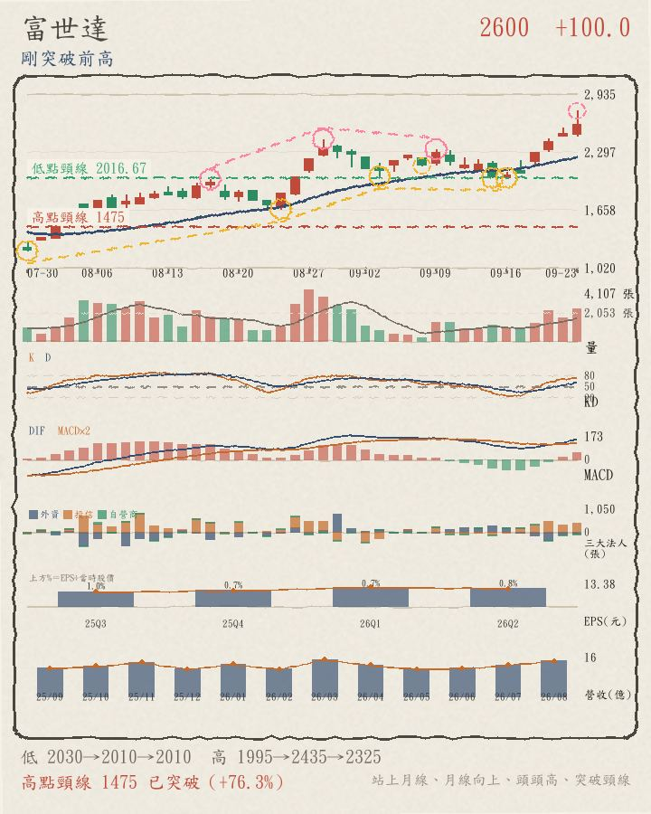
今天帶量收紅、站上月線 2237.75，已站上高點頸線 1475，高點還在墊高（但底部沒同步墊高）。
- 月線位置：收盤 2600 在月線 2237.75 之上；5 日線 2380 也在月線之上（短均在上）；月線向上、5 日線向上
- 量能：成交量是 20 日均量的 1.55 倍，比 20 日均量大不少；收紅又量增，量價配合
- 關鍵價位：高點頸線 1475 已站上；最近轉折高點 2325（高於 11.8%）；最近轉折低點 2010（高於 29.4%）
- 轉折結構：高點 1995、2435、2325 墊高 18.3%（頭頭高），但低點 2030、2010、2010 沒有同步墊高；還沒確認的轉折低點 09-08 2145；還沒確認的轉折高點 09-23 2750（圖上虛線小圈）
剛突破前高 成交金額 65 億・全榜第 43 名（上市第 32 名）
好條件 6/8：站上月線、月線向上、頭頭高、相對大盤強、外資買超、量價攻擊（收紅＋大量）
不好條件 0/8：無
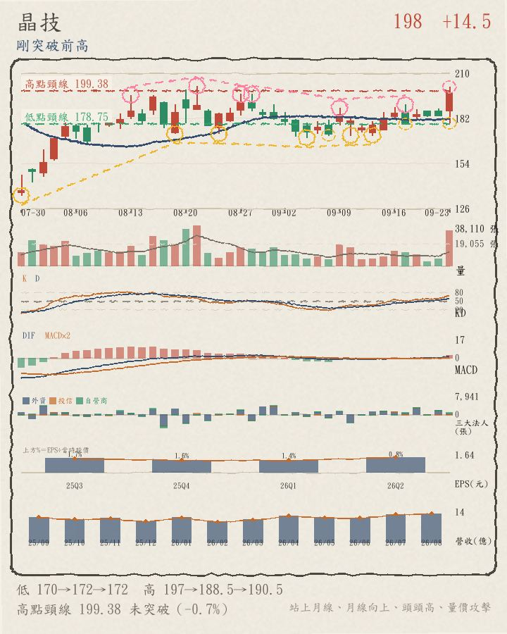
今天帶量收紅、站上月線 181.875，離高點頸線 199.38 還差 0.7%，高點還在墊高（但底部沒同步墊高）。
- 月線位置：收盤 198 在月線 181.875 之上；5 日線 185.6 也在月線之上（短均在上）；月線向上、5 日線向上
- 量能：成交量是 20 日均量的 3.02 倍，比 20 日均量大不少；收紅又量增，量價配合
- 關鍵價位：高點頸線 199.38 還沒突破，差 0.7%；最近轉折高點 190.5（高於 3.9%）；最近轉折低點 171.5（高於 15.5%）
- 轉折結構：高點 197、188.5、190.5 墊高 5.8%（頭頭高），但低點 170、171.5、171.5 沒有同步墊高；還沒確認的轉折低點 09-17 178.5、09-23 179；還沒確認的轉折高點 09-23 201.5（圖上虛線小圈）
剛突破前高 成交金額 63.25 億・全榜第 45 名（上市第 33 名）
好條件 7/8：站上月線、月線向上、頭頭高、突破頸線、相對大盤強、外資買超、量價攻擊（收紅＋大量）
不好條件 0/8：無
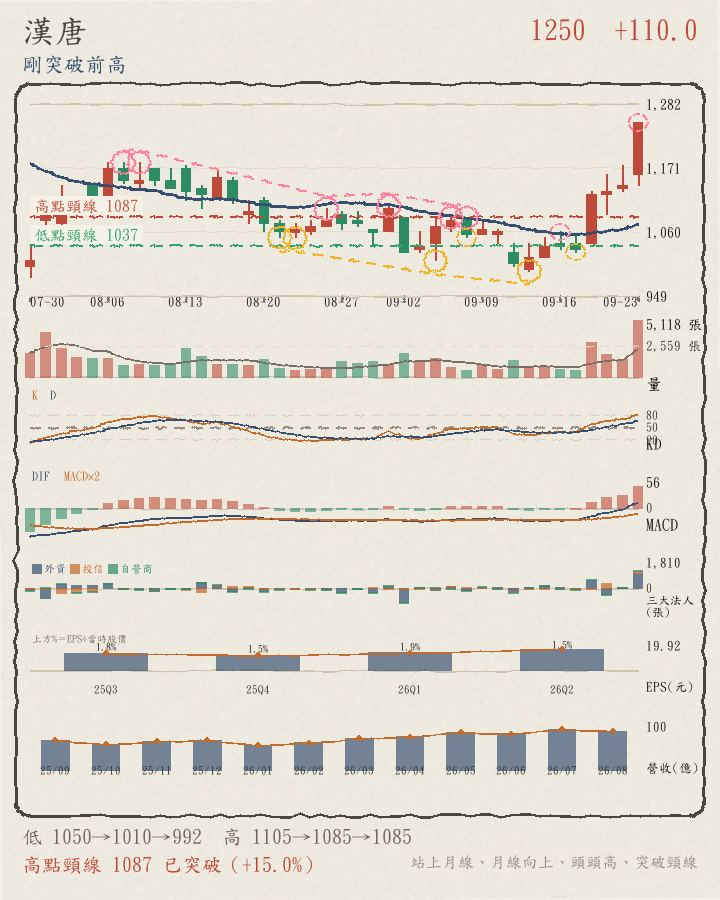
今天帶量收紅、站上月線 1073.25，已站上高點頸線 1087，高點還在墊高（但底部沒同步墊高）。
- 月線位置：收盤 1250 在月線 1073.25 之上；5 日線 1135 也在月線之上（短均在上）；月線向上、5 日線向上
- 量能：成交量是 20 日均量的 4.01 倍，比 20 日均量大不少；收紅又量增，量價配合
- 關鍵價位：高點頸線 1087 已站上；最近轉折高點 1085（高於 15.2%）；最近轉折低點 992（高於 26.0%）
- 轉折結構：高點 1105、1085、1085 墊高 15.2%（頭頭高），但低點 1050、1010、992 沒有同步墊高；還沒確認的轉折低點 09-08 1050、09-17 1025；還沒確認的轉折高點 09-16 1060、09-23 1250（圖上虛線小圈）
剛突破前高 成交金額 61.97 億・全榜第 46 名（上市第 34 名）
好條件 4/8：站上月線、月線向上、頭頭高、外資買超
不好條件 2/8：今日下跌、相對大盤弱
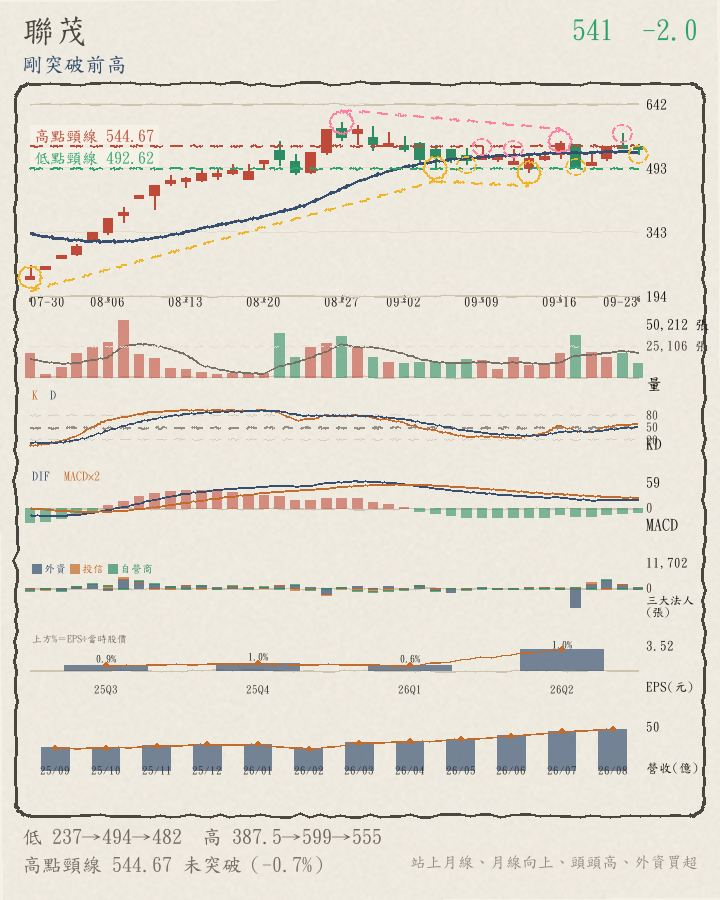
今天收黑、成交量也比平均少、站上月線 529.6，離高點頸線 544.67 還差 0.7%，高點還在墊高（但底部沒同步墊高）。
- 月線位置：收盤 541 在月線 529.6 之上；5 日線 525.2 也在月線之下（短均在下）；月線向上、5 日線向上
- 量能：成交量是 20 日均量的 0.63 倍，比 20 日均量少很多
- 關鍵價位：高點頸線 544.67 還沒突破，差 0.7%；最近轉折高點 555（低於 2.5%）；最近轉折低點 482（高於 12.2%）
- 轉折結構：高點 387.5、599、555 墊高 3.4%（頭頭高），但低點 237、493.5、482 沒有同步墊高；還沒確認的轉折低點 09-17 495、09-23 525；還沒確認的轉折高點 09-11 537、09-22 574（圖上虛線小圈）
上升趨勢（底底高＋頭頭高） 成交金額 61.95 億・全榜第 47 名（上市第 35 名）
好條件 5/8：站上月線、月線向上、底底高、頭頭高、外資買超
不好條件 4/8：今日下跌、相對大盤弱、量增下跌（出貨）、收盤跌破前一日低點
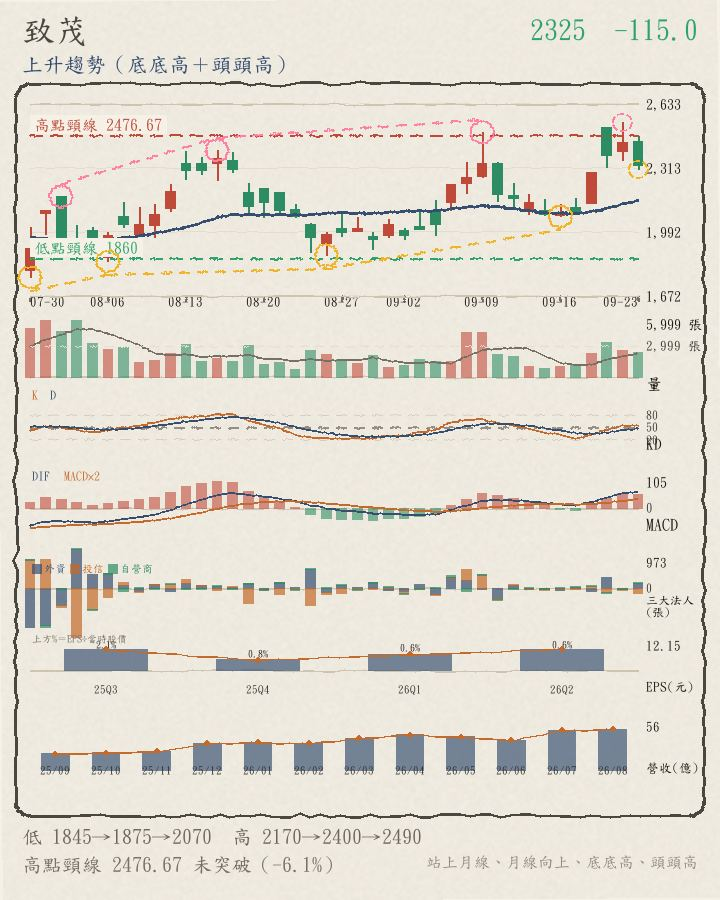
今天帶量收黑、站上月線 2150.25，離高點頸線 2476.67 還差 6.1%，轉折結構仍是底底高＋頭頭高。
- 月線位置：收盤 2325 在月線 2150.25 之上；5 日線 2303 也在月線之上（短均在上）；月線向上、5 日線向上
- 量能：成交量是 20 日均量的 1.23 倍，比 20 日均量大不少；收黑卻量增，量價背離
- 關鍵價位：高點頸線 2476.67 還沒突破，差 6.1%；最近轉折高點 2490（低於 6.6%）；最近轉折低點 2070（高於 12.3%）
- 轉折結構：低點 1845、1875、2070 一路墊高 12.2%、高點 2170、2400、2490 也一路墊高 14.7%，是底底高＋頭頭高；還沒確認的轉折低點 09-23 2305；還沒確認的轉折高點 09-22 2540（圖上虛線小圈）
上升趨勢（底底高＋頭頭高） 成交金額 61.19 億・全榜第 48 名（上市第 36 名）
好條件 3/8：底底高、頭頭高、外資買超
不好條件 4/8：今日下跌、相對大盤弱、在月線之下、月線下彎
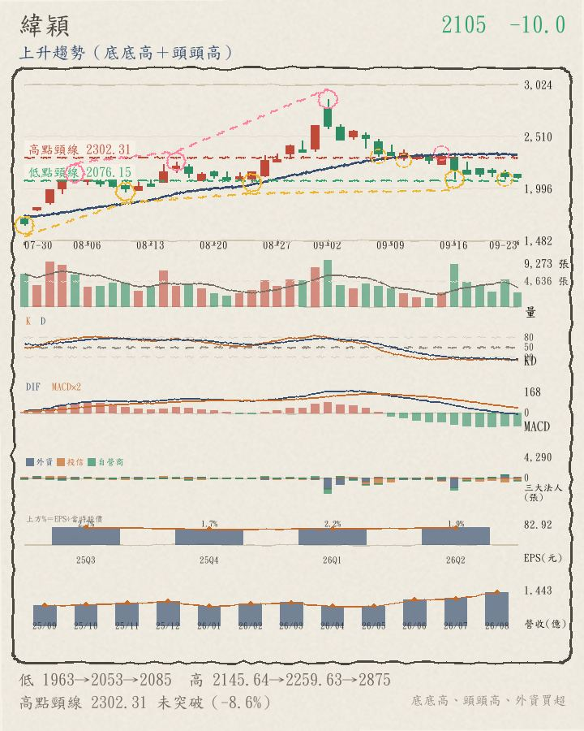
今天收黑、成交量也比平均少、跌破月線 2327.36，離高點頸線 2302.31 還差 8.6%，轉折結構仍是底底高＋頭頭高。
- 月線位置：收盤 2105 在月線 2327.36 之下；5 日線 2129 也在月線之下（短均在下）；月線走平或向下、5 日線走平或向下
- 量能：成交量是 20 日均量的 0.60 倍，比 20 日均量少很多
- 關鍵價位：高點頸線 2302.31 還沒突破，差 8.6%；最近轉折高點 2875（低於 26.8%）；最近轉折低點 2085（高於 1.0%）
- 轉折結構：低點 1962.92、2053.44、2085 一路墊高 6.2%、高點 2145.64、2259.63、2875 也一路墊高 34.0%，是底底高＋頭頭高；還沒確認的轉折低點 09-10 2270、09-22 2090；還沒確認的轉折高點 09-15 2345（圖上虛線小圈）
剛突破前高 成交金額 60.11 億・全榜第 49 名（上市第 37 名）
好條件 5/8：站上月線、月線向上、頭頭高、突破頸線、量價攻擊（收紅＋大量）
不好條件 2/8：相對大盤弱、外資賣超
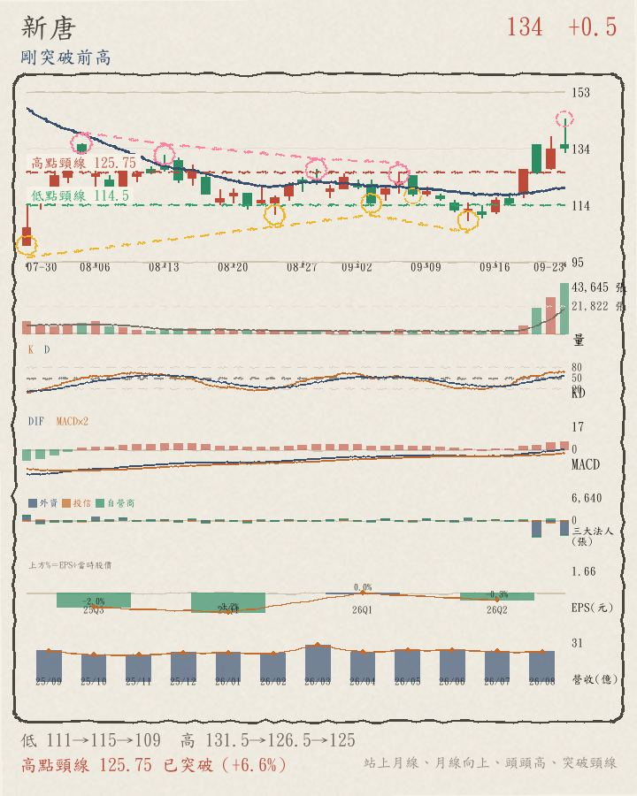
今天帶量收紅、站上月線 120.35，已站上高點頸線 125.75，高點還在墊高（但底部沒同步墊高）。
- 月線位置：收盤 134 在月線 120.35 之上；5 日線 126.9 也在月線之上（短均在上）；月線向上、5 日線向上
- 量能：成交量是 20 日均量的 8.88 倍，比 20 日均量大不少；收紅又量增，量價配合
- 關鍵價位：高點頸線 125.75 已站上；最近轉折高點 125（高於 7.2%）；最近轉折低點 109（高於 22.9%）
- 轉折結構：高點 131.5、126.5、125 墊高 15.2%（頭頭高），但低點 111、115、109 沒有同步墊高；還沒確認的轉折低點 09-08 117.5；還沒確認的轉折高點 09-23 144（圖上虛線小圈）
底部墊高、突破前高 成交金額 59.46 億・全榜第 50 名（上市第 38 名）
好條件 8/8：站上月線、月線向上、底底高、頭頭高、突破頸線、相對大盤強、外資買超、量價攻擊（收紅＋大量）
不好條件 0/8：無
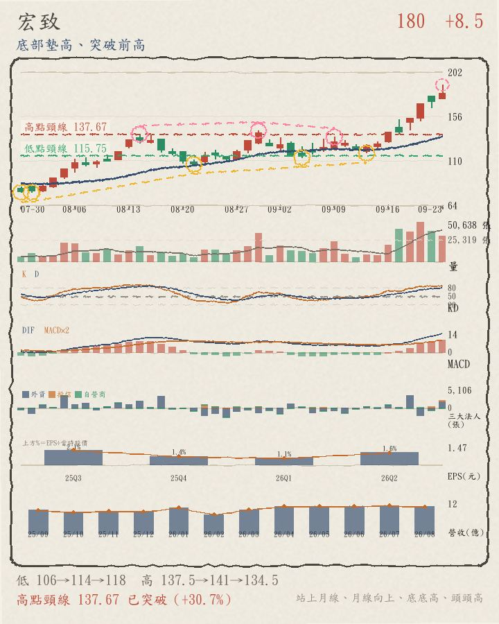
今天帶量收紅、站上月線 135.375，已站上高點頸線 137.67，轉折結構仍是底底高＋頭頭高。
- 月線位置：收盤 180 在月線 135.375 之上；5 日線 162.9 也在月線之上（短均在上）；月線向上、5 日線向上
- 量能：成交量是 20 日均量的 1.62 倍，比 20 日均量大不少；收紅又量增，量價配合
- 關鍵價位：高點頸線 137.67 已站上；最近轉折高點 134.5（高於 33.8%）；最近轉折低點 118（高於 52.5%）
- 轉折結構：低點 106.5、113.5、118 一路墊高 10.8%、高點 137.5、141、134.5 也一路墊高 40.1%，是底底高＋頭頭高；還沒確認的轉折高點 09-23 188.5（圖上虛線小圈）
底部墊高、未過前高 成交金額 59.16 億・全榜第 51 名（上市第 39 名）
好條件 3/8：站上月線、月線向上、底底高
不好條件 4/8：今日下跌、相對大盤弱、外資賣超、收盤跌破前一日低點
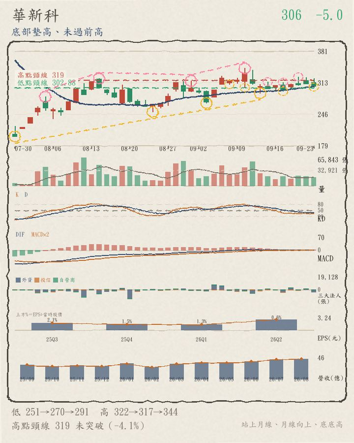
今天收黑、成交量也比平均少、站上月線 305.525，離高點頸線 319 還差 4.1%，底部還在墊高（但高點沒同步創高）。
- 月線位置：收盤 306 在月線 305.525 之上；5 日線 306.4 也在月線之上（短均在上）；月線向上、5 日線走平或向下
- 量能：成交量是 20 日均量的 0.64 倍，比 20 日均量少很多
- 關鍵價位：高點頸線 319 還沒突破，差 4.1%；最近轉折高點 344（低於 11.0%）；最近轉折低點 291（高於 5.2%）
- 轉折結構：低點 251、270、291 墊高 15.9%（底底高），但高點 322、317、344 沒有同步創高；還沒確認的轉折低點 09-17 295、09-23 304；還沒確認的轉折高點 09-17 314.5、09-21 326（圖上虛線小圈）
上升趨勢（底底高＋頭頭高） 成交金額 56 億・全榜第 52 名（上市第 40 名）
好條件 7/8：站上月線、月線向上、底底高、頭頭高、突破頸線、相對大盤強、量價攻擊（收紅＋大量）
不好條件 1/8：外資賣超
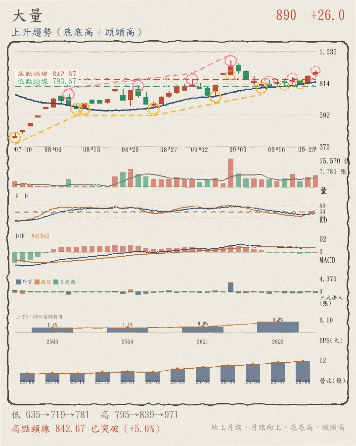
今天帶量收紅、站上月線 823，已站上高點頸線 842.67，轉折結構仍是底底高＋頭頭高。
- 月線位置：收盤 890 在月線 823 之上；5 日線 842.2 也在月線之上（短均在上）；月線向上、5 日線向上
- 量能：成交量是 20 日均量的 1.31 倍，比 20 日均量大不少；收紅又量增，量價配合
- 關鍵價位：高點頸線 842.67 已站上；最近轉折高點 971（低於 8.3%）；最近轉折低點 781（高於 14.0%）
- 轉折結構：低點 635、719、781 一路墊高 23.0%、高點 795、839、971 也一路墊高 22.1%，是底底高＋頭頭高；還沒確認的轉折低點 09-17 795、09-21 805；還沒確認的轉折高點 09-18 855、09-23 903（圖上虛線小圈）
底部墊高、突破前高 成交金額 53.09 億・全榜第 54 名（上市第 41 名）
好條件 6/8：站上月線、月線向上、底底高、頭頭高、突破頸線、外資買超
不好條件 3/8：今日下跌、相對大盤弱、量增下跌（出貨）
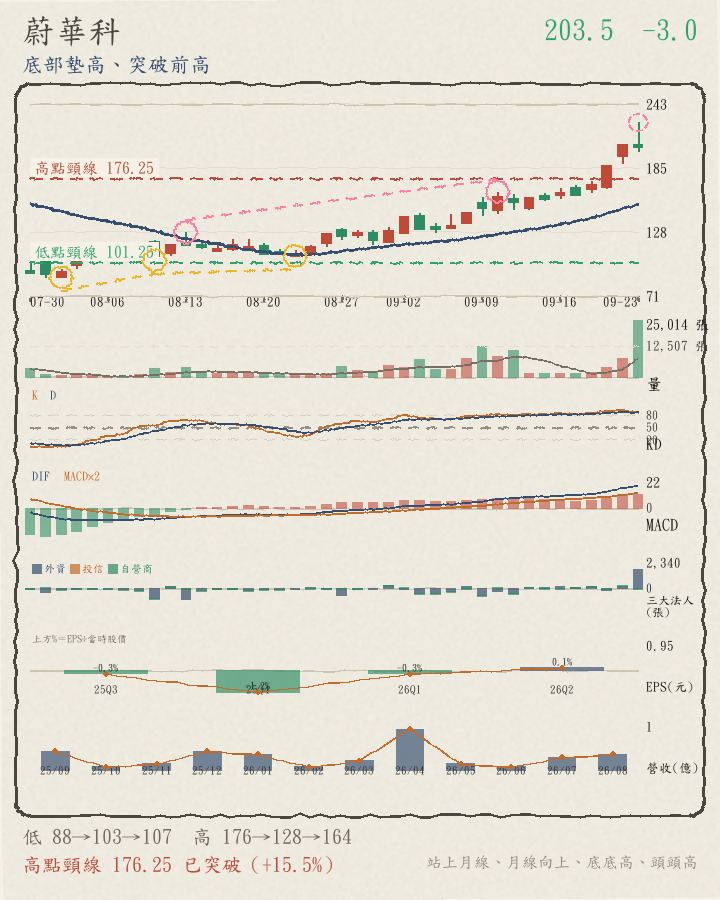
今天帶量收黑、站上月線 153.15，已站上高點頸線 176.25，轉折結構仍是底底高＋頭頭高。
- 月線位置：收盤 203.5 在月線 153.15 之上；5 日線 186 也在月線之上（短均在上）；月線向上、5 日線向上
- 量能：成交量是 20 日均量的 5.13 倍，比 20 日均量大不少；收黑卻量增，量價背離
- 關鍵價位：高點頸線 176.25 已站上；最近轉折高點 164（高於 24.1%）；最近轉折低點 107（高於 90.2%）
- 轉折結構：低點 87.8、103、107 一路墊高 21.9%、高點 176、128、164 也一路墊高 37.8%，是底底高＋頭頭高；還沒確認的轉折高點 09-23 226（圖上虛線小圈）
上升趨勢（底底高＋頭頭高） 成交金額 51.55 億・全榜第 56 名（上市第 42 名）
好條件 7/8：站上月線、月線向上、底底高、頭頭高、相對大盤強、外資買超、量價攻擊（收紅＋大量）
不好條件 0/8：無
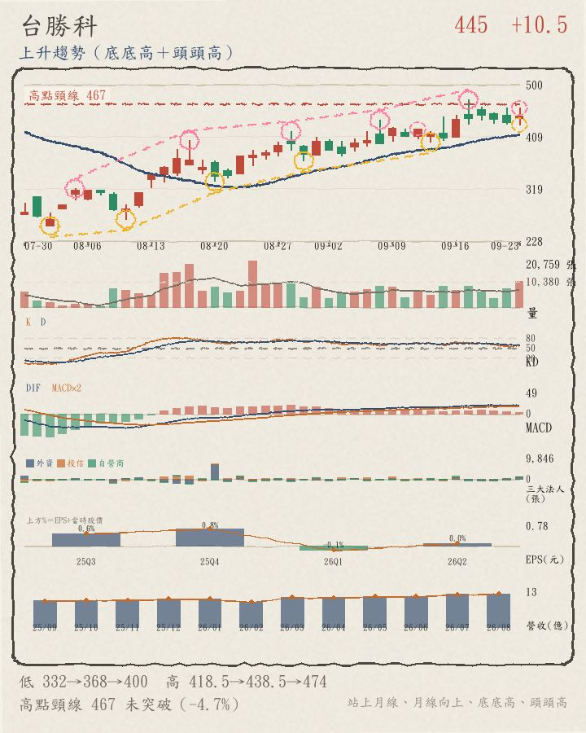
今天帶量收紅、站上月線 413.475，離高點頸線 467 還差 4.7%，轉折結構仍是底底高＋頭頭高。
- 月線位置：收盤 445 在月線 413.475 之上；5 日線 441.7 也在月線之上（短均在上）；月線向上、5 日線向上
- 量能：成交量是 20 日均量的 1.55 倍，比 20 日均量大不少；收紅又量增，量價配合
- 關鍵價位：高點頸線 467 還沒突破，差 4.7%；最近轉折高點 474（低於 6.1%）；最近轉折低點 400（高於 11.3%）
- 轉折結構：低點 331.5、367.5、400 一路墊高 20.7%、高點 418.5、438.5、474 也一路墊高 13.3%，是底底高＋頭頭高；還沒確認的轉折低點 09-23 430.5；還沒確認的轉折高點 09-11 423.5、09-23 460（圖上虛線小圈）
上升趨勢（底底高＋頭頭高） 成交金額 48.55 億・全榜第 57 名（上市第 43 名）
好條件 4/8：站上月線、月線向上、底底高、頭頭高
不好條件 4/8：今日下跌、相對大盤弱、外資賣超、收盤跌破前一日低點
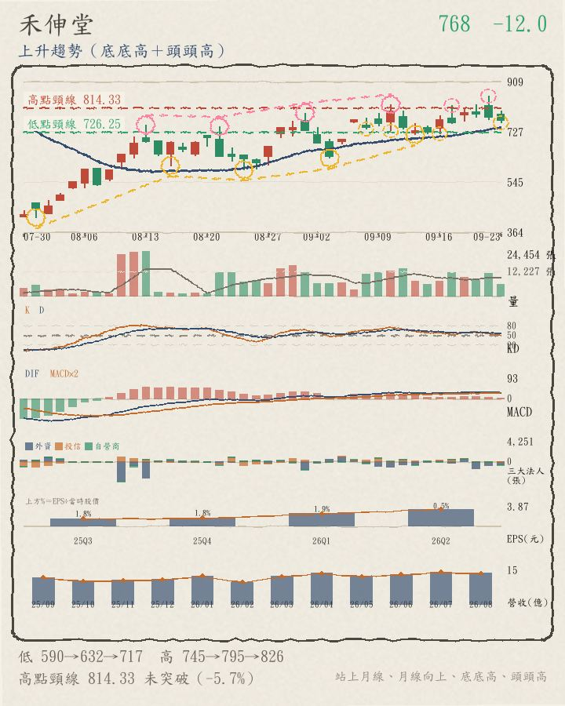
今天收黑、成交量也比平均少、站上月線 743.15，離高點頸線 814.33 還差 5.7%，轉折結構仍是底底高＋頭頭高。
- 月線位置：收盤 768 在月線 743.15 之上；5 日線 779.2 也在月線之上（短均在上）；月線向上、5 日線向上
- 量能：成交量是 20 日均量的 0.62 倍，比 20 日均量少很多
- 關鍵價位：高點頸線 814.33 還沒突破，差 5.7%；最近轉折高點 826（低於 7.0%）；最近轉折低點 717（高於 7.1%）
- 轉折結構：低點 590、632、717 一路墊高 21.5%、高點 745、795、826 也一路墊高 10.9%，是底底高＋頭頭高；還沒確認的轉折低點 09-16 720、09-23 760；還沒確認的轉折高點 09-17 822、09-22 856（圖上虛線小圈）
高點墊高、底部不穩 成交金額 46.3 億・全榜第 59 名（上市第 44 名）
好條件 3/8：頭頭高、相對大盤強、量價攻擊（收紅＋大量）
不好條件 3/8：在月線之下、外資賣超、月線下彎
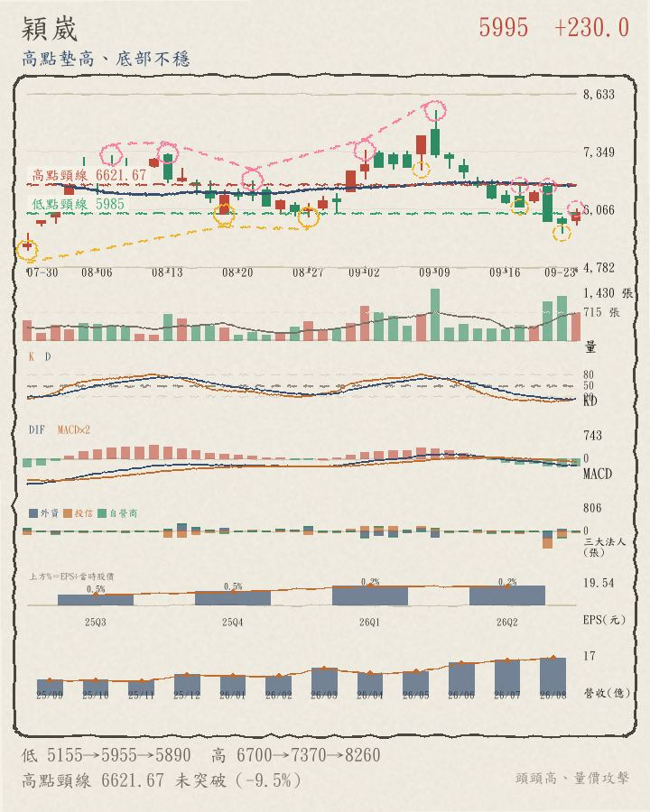
今天帶量收紅、跌破月線 6598.5，離高點頸線 6621.67 還差 9.5%，高點還在墊高（但底部沒同步墊高）。
- 月線位置：收盤 5995 在月線 6598.5 之下；5 日線 6022 也在月線之下（短均在下）；月線走平或向下、5 日線走平或向下
- 量能：成交量是 20 日均量的 1.33 倍，比 20 日均量大不少；收紅又量增，量價配合
- 關鍵價位：高點頸線 6621.67 還沒突破，差 9.5%；最近轉折高點 8260（低於 27.4%）；最近轉折低點 5890（高於 1.8%）
- 轉折結構：高點 6700、7370、8260 墊高 23.3%（頭頭高），但低點 5155、5955、5890 沒有同步墊高；還沒確認的轉折低點 09-17 6110、09-22 5530；還沒確認的轉折高點 09-21 6570、09-23 6070（圖上虛線小圈）
區間或轉弱 成交金額 46.17 億・全榜第 60 名（上市第 45 名）
好條件 2/8：站上月線、月線向上
不好條件 5/8：今日下跌、相對大盤弱、量增下跌（出貨）、外資賣超、收盤跌破前一日低點
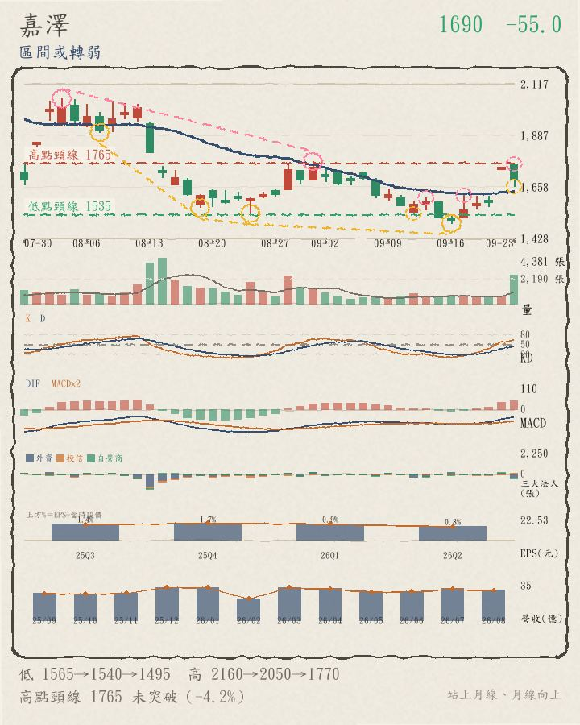
今天帶量收黑、站上月線 1636.75，離高點頸線 1765 還差 4.2%，轉折還沒走出明顯方向。
- 月線位置：收盤 1690 在月線 1636.75 之上；5 日線 1633 也在月線之下（短均在下）；月線向上、5 日線向上
- 量能：成交量是 20 日均量的 3.00 倍，比 20 日均量大不少；收黑卻量增，量價背離
- 關鍵價位：高點頸線 1765 還沒突破，差 4.2%；最近轉折高點 1770（低於 4.5%）；最近轉折低點 1495（高於 13.0%）
- 轉折結構：低點 1565、1540、1495 與高點 2160、2050、1770 都沒有明顯遞增，屬於區間震盪或轉弱；還沒確認的轉折低點 09-11 1540、09-23 1660；還沒確認的轉折高點 09-17 1620、09-23 1760（圖上虛線小圈）
底部墊高、突破前高 成交金額 45.16 億・全榜第 61 名（上市第 46 名）
好條件 8/8：站上月線、月線向上、底底高、頭頭高、突破頸線、相對大盤強、外資買超、量價攻擊（收紅＋大量）
不好條件 0/8：無
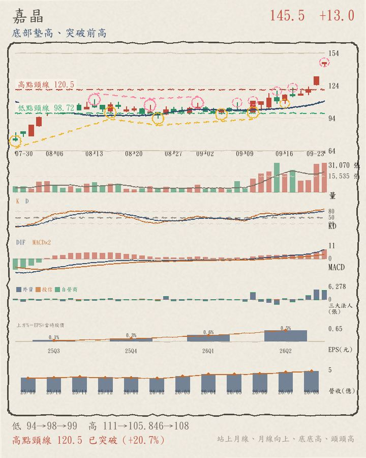
今天帶量收紅、站上月線 109.79，已站上高點頸線 120.5，轉折結構仍是底底高＋頭頭高。
- 月線位置：收盤 145.5 在月線 109.79 之上；5 日線 126.1 也在月線之上（短均在上）；月線向上、5 日線向上
- 量能：成交量是 20 日均量的 2.67 倍，比 20 日均量大不少；收紅又量增，量價配合
- 關鍵價位：高點頸線 120.5 已站上；最近轉折高點 108（高於 34.7%）；最近轉折低點 99.3（高於 46.5%）
- 轉折結構：低點 93.7634、97.5、99.3 一路墊高 5.9%、高點 111、105.846、108 也一路墊高 34.7%，是底底高＋頭頭高；還沒確認的轉折低點 09-16 107.5；還沒確認的轉折高點 09-17 122、09-23 145.5（圖上虛線小圈）
區間或轉弱 成交金額 43.79 億・全榜第 62 名（上市第 47 名）
好條件 1/8：外資買超
不好條件 5/8：今日下跌、相對大盤弱、在月線之下、月線下彎、收盤跌破前一日低點
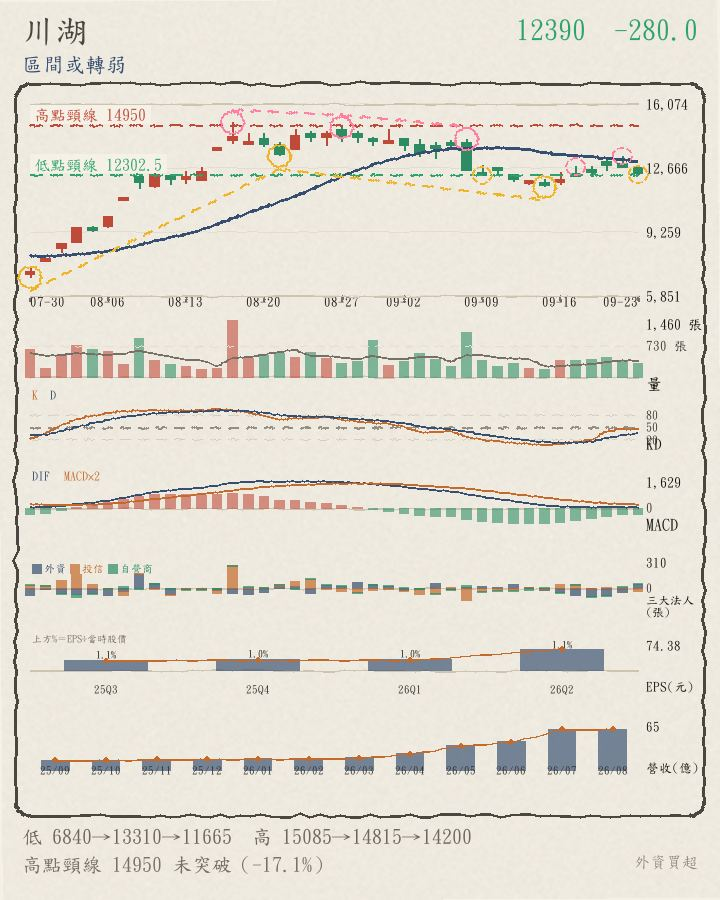
今天收黑、成交量也比平均少、跌破月線 13002.5，離高點頸線 14950 還差 17.1%，轉折還沒走出明顯方向。
- 月線位置：收盤 12390 在月線 13002.5 之下；5 日線 12530 也在月線之下（短均在下）；月線走平或向下、5 日線向上
- 量能：成交量是 20 日均量的 0.79 倍，比 20 日均量少很多
- 關鍵價位：高點頸線 14950 還沒突破，差 17.1%；最近轉折高點 14200（低於 12.7%）；最近轉折低點 11665（高於 6.2%）
- 轉折結構：低點 6840、13310、11665 與高點 15085、14815、14200 都沒有明顯遞增，屬於區間震盪或轉弱；還沒確認的轉折低點 09-09 12285、09-23 12320；還沒確認的轉折高點 09-17 12730、09-22 13305（圖上虛線小圈）
底部墊高、未過前高 成交金額 42.95 億・全榜第 63 名（上市第 48 名）
好條件 2/8：月線向上、底底高
不好條件 5/8：今日下跌、相對大盤弱、在月線之下、外資賣超、收盤跌破前一日低點
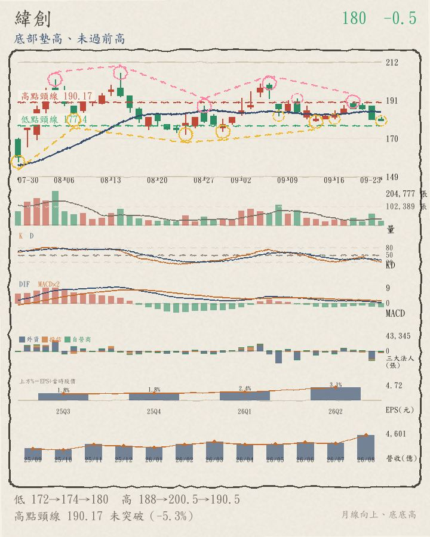
今天收黑、成交量也比平均少、跌破月線 184.95，離高點頸線 190.17 還差 5.3%，底部還在墊高（但高點沒同步創高）。
- 月線位置：收盤 180 在月線 184.95 之下；5 日線 184 也在月線之下（短均在下）；月線向上、5 日線向上
- 量能：成交量是 20 日均量的 0.45 倍，比 20 日均量少很多
- 關鍵價位：高點頸線 190.17 還沒突破，差 5.3%；最近轉折高點 190.5（低於 5.5%）；最近轉折低點 179.5（高於 0.3%）
- 轉折結構：低點 172.5、174、179.5 墊高 4.1%（底底高），但高點 188、200.5、190.5 沒有同步創高；還沒確認的轉折低點 09-16 181、09-23 180；還沒確認的轉折高點 09-10 192（圖上虛線小圈）
區間或轉弱 成交金額 41.92 億・全榜第 65 名（上市第 49 名）
好條件 0/8：無
不好條件 5/8：今日下跌、相對大盤弱、在月線之下、外資賣超、月線下彎
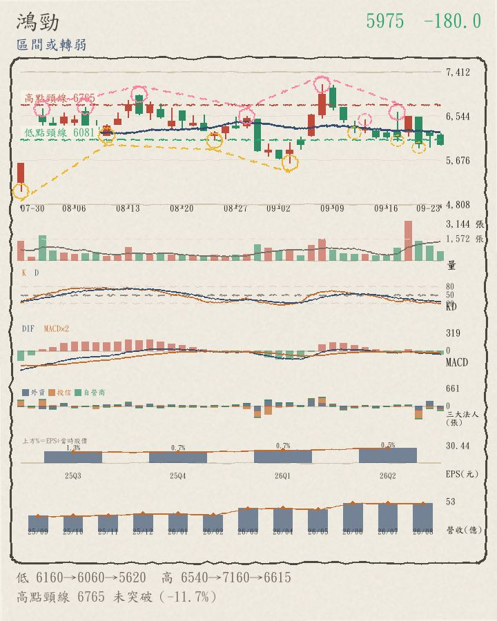
今天收黑、成交量也比平均少、跌破月線 6226.75，離高點頸線 6765 還差 11.7%，轉折還沒走出明顯方向。
- 月線位置：收盤 5975 在月線 6226.75 之下；5 日線 6161 也在月線之下（短均在下）；月線走平或向下、5 日線走平或向下
- 量能：成交量是 20 日均量的 0.77 倍，比 20 日均量少很多
- 關鍵價位：高點頸線 6765 還沒突破，差 11.7%；最近轉折高點 6615（低於 9.7%）；最近轉折低點 5620（高於 6.3%）
- 轉折結構：低點 6160、6060、5620 與高點 6540、7160、6615 都沒有明顯遞增，屬於區間震盪或轉弱；還沒確認的轉折低點 09-17 6055、09-21 5920；還沒確認的轉折高點 09-14 6470（圖上虛線小圈）
底部墊高、突破前高 成交金額 40.67 億・全榜第 67 名（上市第 50 名）
好條件 7/8：站上月線、月線向上、底底高、頭頭高、突破頸線、相對大盤強、量價攻擊（收紅＋大量）
不好條件 1/8：外資賣超
今天帶量收紅、站上月線 37.38，已站上高點頸線 37.62，轉折結構仍是底底高＋頭頭高。
- 月線位置：收盤 48.3 在月線 37.38 之上；5 日線 43.9 也在月線之上（短均在上）；月線向上、5 日線向上
- 量能：成交量是 20 日均量的 3.88 倍，比 20 日均量大不少；收紅又量增，量價配合
- 關鍵價位：高點頸線 37.62 已站上；最近轉折高點 37.55（高於 28.6%）；最近轉折低點 34.3（高於 40.8%）
- 轉折結構：低點 30.1、32.8、34.3 一路墊高 14.0%、高點 28.6、37.7、37.55 也一路墊高 34.5%，是底底高＋頭頭高；還沒確認的轉折低點 09-11 34.7、09-18 38.7；還沒確認的轉折高點 09-17 42.95、09-23 50.5（圖上虛線小圈）
區間或轉弱 成交金額 269.69 億・全榜第 5 名（上櫃第 1 名）
好條件 1/8：站上月線
不好條件 5/8：今日下跌、相對大盤弱、量增下跌（出貨）、外資賣超、月線下彎
今天帶量收黑、站上月線 943.5，離高點頸線 1018.75 還差 6.7%，轉折還沒走出明顯方向。
- 月線位置：收盤 950 在月線 943.5 之上；5 日線 941.6 也在月線之下（短均在下）；月線走平或向下、5 日線向上
- 量能：成交量是 20 日均量的 3.30 倍，比 20 日均量大不少；收黑卻量增，量價背離
- 關鍵價位：高點頸線 1018.75 還沒突破，差 6.7%；最近轉折高點 1015（低於 6.4%）；最近轉折低點 872（高於 8.9%）
- 轉折結構：低點 931、875、872 與高點 1035、1015、1015 都沒有明顯遞增，屬於區間震盪或轉弱；還沒確認的轉折低點 09-18 901、09-23 922；還沒確認的轉折高點 09-17 977、09-22 1010（圖上虛線小圈）
剛突破前高 成交金額 159.3 億・全榜第 14 名（上櫃第 2 名）
好條件 5/8：站上月線、月線向上、頭頭高、相對大盤強、量價攻擊（收紅＋大量）
不好條件 1/8：外資賣超
今天帶量收紅、站上月線 2074.75，離高點頸線 2337.5 還差 5.2%，高點還在墊高（但底部沒同步墊高）。
- 月線位置：收盤 2215 在月線 2074.75 之上；5 日線 2132 也在月線之上（短均在上）；月線向上、5 日線向上
- 量能：成交量是 20 日均量的 1.92 倍，比 20 日均量大不少；收紅又量增，量價配合
- 關鍵價位：高點頸線 2337.5 還沒突破，差 5.2%；最近轉折高點 2160（高於 2.5%）；最近轉折低點 1900（高於 16.6%）
- 轉折結構：高點 2215、2195、2160 墊高 8.8%（頭頭高），但低點 1905、1970、1900 沒有同步墊高；還沒確認的轉折高點 09-23 2350（圖上虛線小圈）
剛突破前高 成交金額 138.54 億・全榜第 16 名（上櫃第 3 名）
好條件 3/8：站上月線、月線向上、頭頭高
不好條件 5/8：今日下跌、相對大盤弱、量增下跌（出貨）、外資賣超、收盤跌破前一日低點
今天帶量收黑、站上月線 110.375，離高點頸線 125 還差 7.6%，高點還在墊高（但底部沒同步墊高）。
- 月線位置：收盤 115.5 在月線 110.375 之上；5 日線 115.2 也在月線之上（短均在上）；月線向上、5 日線向上
- 量能：成交量是 20 日均量的 2.52 倍，比 20 日均量大不少；收黑卻量增，量價背離
- 關鍵價位：高點頸線 125 還沒突破，差 7.6%；最近轉折高點 119（低於 2.9%）；最近轉折低點 100（高於 15.5%）
- 轉折結構：高點 131、117.5、119 墊高 5.0%（頭頭高），但低點 103.5、104、100 沒有同步墊高；還沒確認的轉折低點 09-08 109、09-23 114.5；還沒確認的轉折高點 09-22 125、09-23 125（圖上虛線小圈）
剛突破前高 成交金額 134.28 億・全榜第 17 名（上櫃第 4 名）
好條件 3/8：站上月線、月線向上、頭頭高
不好條件 3/8：今日下跌、相對大盤弱、外資賣超
今天收黑、成交量也比平均少、站上月線 463.725，離高點頸線 512.5 還差 3.0%，高點還在墊高（但底部沒同步墊高）。
- 月線位置：收盤 497 在月線 463.725 之上；5 日線 491.9 也在月線之上（短均在上）；月線向上、5 日線向上
- 量能：成交量是 20 日均量的 0.84 倍，比 20 日均量少很多
- 關鍵價位：高點頸線 512.5 還沒突破，差 3.0%；最近轉折高點 478（高於 4.0%）；最近轉折低點 420（高於 18.3%）
- 轉折結構：高點 492、492、478 墊高 8.4%（頭頭高），但低點 349.5、438.5、420 沒有同步墊高；還沒確認的轉折低點 09-18 467、09-23 486.5；還沒確認的轉折高點 09-17 507、09-23 518（圖上虛線小圈）
底部墊高、突破前高 成交金額 110.78 億・全榜第 23 名（上櫃第 5 名）
好條件 2/8：底底高、頭頭高
不好條件 7/8：今日下跌、相對大盤弱、在月線之下、量增下跌（出貨）、外資賣超、月線下彎、收盤跌破前一日低點
今天帶量收黑、跌破月線 2997.25，離高點頸線 2910 還差 7.9%，轉折結構仍是底底高＋頭頭高。
- 月線位置：收盤 2680 在月線 2997.25 之下；5 日線 2796 也在月線之下（短均在下）；月線走平或向下、5 日線向上
- 量能：成交量是 20 日均量的 1.24 倍，比 20 日均量大不少；收黑卻量增，量價背離
- 關鍵價位：高點頸線 2910 還沒突破，差 7.9%；最近轉折高點 2930（低於 8.5%）；最近轉折低點 2650（高於 1.1%）
- 轉折結構：低點 1335、1450、2650 一路墊高 98.5%、高點 3065、3600、2930 也一路墊高 0.7%，是底底高＋頭頭高；還沒確認的轉折低點 09-23 2585；還沒確認的轉折高點 09-17 2930、09-22 2950（圖上虛線小圈）
底部墊高、突破前高 成交金額 104.02 億・全榜第 27 名（上櫃第 6 名）
好條件 7/8：站上月線、月線向上、底底高、頭頭高、突破頸線、相對大盤強、量價攻擊（收紅＋大量）
不好條件 1/8：外資賣超
今天帶量收紅、站上月線 2684，已站上高點頸線 2797.5，轉折結構仍是底底高＋頭頭高。
- 月線位置：收盤 3305 在月線 2684 之上；5 日線 2960 也在月線之上（短均在上）；月線向上、5 日線向上
- 量能：成交量是 20 日均量的 2.21 倍，比 20 日均量大不少；收紅又量增，量價配合
- 關鍵價位：高點頸線 2797.5 已站上；最近轉折高點 2875（高於 15.0%）；最近轉折低點 2530（高於 30.6%）
- 轉折結構：低點 1995、2090、2530 一路墊高 26.8%、高點 2825、2720、2875 也一路墊高 16.5%，是底底高＋頭頭高；還沒確認的轉折高點 09-14 2770、09-23 3350（圖上虛線小圈）
剛突破前高 成交金額 95.21 億・全榜第 29 名（上櫃第 7 名）
好條件 4/8：站上月線、頭頭高、相對大盤強、外資買超
不好條件 1/8：月線下彎
今天收紅、但成交量比平均少、站上月線 1399，離高點頸線 1537.5 還差 5.0%，高點還在墊高（但底部沒同步墊高）。
- 月線位置：收盤 1460 在月線 1399 之上；5 日線 1405 也在月線之上（短均在上）；月線走平或向下、5 日線向上
- 量能：成交量是 20 日均量的 0.94 倍，比 20 日均量少一些；收紅但量縮，量價背離
- 關鍵價位：高點頸線 1537.5 還沒突破，差 5.0%；最近轉折高點 1460（高於 0.0%）；最近轉折低點 1275（高於 14.5%）
- 轉折結構：高點 1565、1430、1460 墊高 3.4%（頭頭高），但低點 1395、1295、1275 沒有同步墊高；還沒確認的轉折低點 09-09 1315、09-14 1320；還沒確認的轉折高點 09-17 1460、09-22 1510（圖上虛線小圈）
剛突破前高 成交金額 85.2 億・全榜第 34 名（上櫃第 8 名）
好條件 5/8：站上月線、月線向上、頭頭高、突破頸線、外資買超
不好條件 3/8：今日下跌、相對大盤弱、收盤跌破前一日低點
今天收黑、成交量也比平均少、站上月線 196.125，已站上高點頸線 203，高點還在墊高（但底部沒同步墊高）。
- 月線位置：收盤 214.5 在月線 196.125 之上；5 日線 219.2 也在月線之上（短均在上）；月線向上、5 日線向上
- 量能：成交量是 20 日均量的 0.82 倍，比 20 日均量少很多
- 關鍵價位：高點頸線 203 已站上；最近轉折高點 203（高於 5.7%）；最近轉折低點 171（高於 25.4%）
- 轉折結構：高點 171、203、203 墊高 14.8%（頭頭高），但低點 155.5、152、171 沒有同步墊高；還沒確認的轉折低點 09-23 213.5；還沒確認的轉折高點 09-22 233（圖上虛線小圈）
高點墊高、底部不穩 成交金額 82.78 億・全榜第 36 名（上櫃第 9 名）
好條件 3/8：站上月線、月線向上、頭頭高
不好條件 4/8：今日下跌、相對大盤弱、量增下跌（出貨）、外資賣超
今天帶量收黑、站上月線 437.125，離高點頸線 491.5 還差 4.0%，高點還在墊高（但底部沒同步墊高）。
- 月線位置：收盤 472 在月線 437.125 之上；5 日線 455.1 也在月線之上（短均在上）；月線向上、5 日線向上
- 量能：成交量是 20 日均量的 1.35 倍，比 20 日均量大不少；收黑卻量增，量價背離
- 關鍵價位：高點頸線 491.5 還沒突破，差 4.0%；最近轉折高點 496（低於 4.8%）；最近轉折低點 407（高於 16.0%）
- 轉折結構：高點 328.5、431、496 墊高 51.0%（頭頭高），但低點 288、289、407 沒有同步墊高；還沒確認的轉折低點 09-18 418.5；還沒確認的轉折高點 09-17 445、09-22 487（圖上虛線小圈）
剛突破前高 成交金額 76.95 億・全榜第 38 名（上櫃第 10 名）
好條件 3/8：站上月線、月線向上、頭頭高
不好條件 5/8：今日下跌、相對大盤弱、量增下跌（出貨）、外資賣超、收盤跌破前一日低點
今天帶量收黑、站上月線 181.825，離高點頸線 187.9 還差 1.8%，高點還在墊高（但底部沒同步墊高）。
- 月線位置：收盤 184.5 在月線 181.825 之上；5 日線 187.1 也在月線之上（短均在上）；月線向上、5 日線向上
- 量能：成交量是 20 日均量的 3.24 倍，比 20 日均量大不少；收黑卻量增，量價背離
- 關鍵價位：高點頸線 187.9 還沒突破，差 1.8%；最近轉折高點 187.5（低於 1.6%）；最近轉折低點 170（高於 8.5%）
- 轉折結構：高點 187.5、187.5、187.5 墊高 7.7%（頭頭高），但低點 173.5、173、170 沒有同步墊高；還沒確認的轉折低點 09-18 180.5、09-23 183；還沒確認的轉折高點 09-17 191.5、09-22 202（圖上虛線小圈）
高點墊高、底部不穩 成交金額 73.9 億・全榜第 39 名（上櫃第 11 名）
好條件 4/8：站上月線、月線向上、頭頭高、突破頸線
不好條件 5/8：今日下跌、相對大盤弱、量增下跌（出貨）、外資賣超、收盤跌破前一日低點
今天帶量收黑、站上月線 237.95，已站上高點頸線 239.83，高點還在墊高（但底部沒同步墊高）。
- 月線位置：收盤 252 在月線 237.95 之上；5 日線 265.1 也在月線之上（短均在上）；月線向上、5 日線向上
- 量能：成交量是 20 日均量的 2.81 倍，比 20 日均量大不少；收黑卻量增，量價背離
- 關鍵價位：高點頸線 239.83 已站上；最近轉折高點 251.5（高於 0.2%）；最近轉折低點 220（高於 14.5%）
- 轉折結構：高點 238、239.5、251.5 墊高 5.7%（頭頭高），但低點 202、222.5、220 沒有同步墊高；還沒確認的轉折低點 09-23 250.5；還沒確認的轉折高點 09-08 242、09-22 289.5（圖上虛線小圈）
剛突破前高 成交金額 63.66 億・全榜第 44 名（上櫃第 12 名）
好條件 4/8：站上月線、月線向上、頭頭高、外資買超
不好條件 2/8：今日下跌、相對大盤弱
今天收黑、成交量也比平均少、站上月線 1378.25，離高點頸線 1630 還差 2.1%，高點還在墊高（但底部沒同步墊高）。
- 月線位置：收盤 1595 在月線 1378.25 之上；5 日線 1516 也在月線之上（短均在上）；月線向上、5 日線向上
- 量能：成交量是 20 日均量的 0.94 倍，比 20 日均量少一些
- 關鍵價位：高點頸線 1630 還沒突破，差 2.1%；最近轉折高點 1505（高於 6.0%）；最近轉折低點 1240（高於 28.6%）
- 轉折結構：高點 1080、1080、1505 墊高 8.3%（頭頭高），但低點 955、1300、1240 沒有同步墊高；還沒確認的轉折高點 09-22 1630、09-23 1630（圖上虛線小圈）
上升趨勢（底底高＋頭頭高） 成交金額 53.76 億・全榜第 53 名（上櫃第 13 名）
好條件 4/8：站上月線、月線向上、底底高、頭頭高
不好條件 4/8：今日下跌、相對大盤弱、量增下跌（出貨）、外資賣超
今天帶量收黑、站上月線 3330.75，轉折結構仍是底底高＋頭頭高。
- 月線位置：收盤 3475 在月線 3330.75 之上；5 日線 3476 也在月線之上（短均在上）；月線向上、5 日線向上
- 量能：成交量是 20 日均量的 1.57 倍，比 20 日均量大不少；收黑卻量增，量價背離
- 關鍵價位：最近轉折高點 3935（低於 11.7%）；最近轉折低點 3165（高於 9.8%）
- 轉折結構：低點 2235、2570、3165 一路墊高 41.6%、高點 2975、3100、3935 也一路墊高 32.3%，是底底高＋頭頭高；還沒確認的轉折低點 09-23 3420；還沒確認的轉折高點 09-22 3775（圖上虛線小圈）
區間或轉弱 成交金額 52.5 億・全榜第 55 名（上櫃第 14 名）
好條件 4/8：站上月線、月線向上、相對大盤強、外資買超
不好條件 0/8：無
今天收紅、但成交量比平均少、站上月線 5434.25，離高點頸線 5770 還差 2.6%，轉折還沒走出明顯方向。
- 月線位置：收盤 5620 在月線 5434.25 之上；5 日線 5552 也在月線之上（短均在上）；月線向上、5 日線走平或向下
- 量能：成交量是 20 日均量的 0.95 倍，跟 20 日均量差不多；收紅但量縮，量價背離
- 關鍵價位：高點頸線 5770 還沒突破，差 2.6%；最近轉折高點 5860（低於 4.1%）；最近轉折低點 5365（高於 4.8%）
- 轉折結構：低點 5000、4730、5365 與高點 5585、6060、5860 都沒有明顯遞增，屬於區間震盪或轉弱；還沒確認的轉折低點 09-17 5485、09-22 5090；還沒確認的轉折高點 09-15 5800、09-21 5850（圖上虛線小圈）
高點墊高、底部不穩 成交金額 47.35 億・全榜第 58 名（上櫃第 15 名）
好條件 5/8：站上月線、月線向上、頭頭高、突破頸線、外資買超
不好條件 3/8：今日下跌、相對大盤弱、收盤跌破前一日低點
今天收黑、成交量也比平均少、站上月線 18155.5，已站上高點頸線 18336.4，高點還在墊高（但底部沒同步墊高）。
- 月線位置：收盤 20280 在月線 18155.5 之上；5 日線 19714 也在月線之上（短均在上）；月線向上、5 日線向上
- 量能：成交量是 20 日均量的 0.84 倍，比 20 日均量少很多
- 關鍵價位：高點頸線 18336.4 已站上；最近轉折高點 19795（高於 2.5%）；最近轉折低點 17170（高於 18.1%）
- 轉折結構：高點 16210、18600、19795 墊高 22.1%（頭頭高），但低點 15930、14600、17170 沒有同步墊高；還沒確認的轉折低點 09-23 19780；還沒確認的轉折高點 09-22 21800（圖上虛線小圈）
區間或轉弱 成交金額 42.42 億・全榜第 64 名（上櫃第 16 名）
好條件 2/8：站上月線、月線向上
不好條件 4/8：今日下跌、相對大盤弱、外資賣超、收盤跌破前一日低點
今天收黑、成交量也比平均少、站上月線 587.55，離高點頸線 633.33 還差 6.8%，轉折還沒走出明顯方向。
- 月線位置：收盤 590 在月線 587.55 之上；5 日線 596 也在月線之上（短均在上）；月線向上、5 日線向上
- 量能：成交量是 20 日均量的 0.82 倍，比 20 日均量少很多
- 關鍵價位：高點頸線 633.33 還沒突破，差 6.8%；最近轉折高點 658（低於 10.3%）；最近轉折低點 501（高於 17.8%）
- 轉折結構：低點 495、572、501 與高點 654、635、658 都沒有明顯遞增，屬於區間震盪或轉弱；還沒確認的轉折低點 09-08 590、09-23 583；還沒確認的轉折高點 09-21 650（圖上虛線小圈）
剛突破前高 成交金額 40.77 億・全榜第 66 名（上櫃第 17 名）
好條件 6/8：站上月線、月線向上、頭頭高、突破頸線、相對大盤強、量價攻擊（收紅＋大量）
不好條件 1/8：外資賣超
今天帶量收紅、站上月線 62.505，已站上高點頸線 64.48，高點還在墊高（但底部沒同步墊高）。
- 月線位置：收盤 70.2 在月線 62.505 之上；5 日線 65.58 也在月線之上（短均在上）；月線向上、5 日線向上
- 量能：成交量是 20 日均量的 12.42 倍，比 20 日均量大不少；收紅又量增，量價配合
- 關鍵價位：高點頸線 64.48 已站上；最近轉折高點 65.7（高於 6.8%）；最近轉折低點 57.7（高於 21.7%）
- 轉折結構：高點 68.9、64.9、65.7 墊高 16.3%（頭頭高），但低點 60.9、59.7、57.7 沒有同步墊高；還沒確認的轉折高點 09-17 65.7、09-23 76.4（圖上虛線小圈）
底部墊高、未過前高 成交金額 39.27 億・全榜第 68 名（上櫃第 18 名）
好條件 2/8：月線向上、底底高
不好條件 4/8：今日下跌、相對大盤弱、在月線之下、外資賣超
今天收黑、成交量也比平均少、跌破月線 120.255，離高點頸線 129.25 還差 7.2%，底部還在墊高（但高點沒同步創高）。
- 月線位置：收盤 120 在月線 120.255 之下；5 日線 118.9 也在月線之下（短均在下）；月線向上、5 日線走平或向下
- 量能：成交量是 20 日均量的 0.42 倍，比 20 日均量少很多
- 關鍵價位：高點頸線 129.25 還沒突破，差 7.2%；最近轉折高點 135（低於 11.1%）；最近轉折低點 111（高於 8.1%）
- 轉折結構：低點 56.2856、108.571、111 墊高 97.2%（底底高），但高點 95.1427、89.4284、135 沒有同步創高；還沒確認的轉折低點 09-15 114.5、09-23 119.5；還沒確認的轉折高點 09-16 121.5、09-22 129.5（圖上虛線小圈）
高點墊高、底部不穩 成交金額 32.01 億・全榜第 69 名（上櫃第 19 名）
好條件 5/8：站上月線、月線向上、頭頭高、相對大盤強、量價攻擊（收紅＋大量）
不好條件 1/8：外資賣超
今天帶量收紅、站上月線 100.66，高點還在墊高（但底部沒同步墊高）。
- 月線位置：收盤 158.5 在月線 100.66 之上；5 日線 139.2 也在月線之上（短均在上）；月線向上、5 日線向上
- 量能：成交量是 20 日均量的 3.69 倍，比 20 日均量大不少；收紅又量增，量價配合
- 關鍵價位：最近轉折高點 105.5（高於 50.2%）；最近轉折低點 42.1（高於 276.5%）
- 轉折結構：高點 55、98.5、105.5 墊高 91.8%（頭頭高），但低點 46.95、48.15、42.1 沒有同步墊高；還沒確認的轉折低點 09-15 88.2；還沒確認的轉折高點 09-08 90.9、09-23 168.5（圖上虛線小圈）
上升趨勢（底底高＋頭頭高） 成交金額 30.61 億・全榜第 70 名（上櫃第 20 名）
好條件 4/8：站上月線、月線向上、底底高、頭頭高
不好條件 3/8：今日下跌、相對大盤弱、外資賣超
今天收黑、成交量也比平均少、站上月線 278.675，離高點頸線 325.67 還差 7.1%，轉折結構仍是底底高＋頭頭高。
- 月線位置：收盤 302.5 在月線 278.675 之上；5 日線 306.2 也在月線之上（短均在上）；月線向上、5 日線向上
- 量能：成交量是 20 日均量的 0.51 倍，比 20 日均量少很多
- 關鍵價位：高點頸線 325.67 還沒突破，差 7.1%；最近轉折高點 270.5（高於 11.8%）；最近轉折低點 265.5（高於 13.9%）
- 轉折結構：低點 189.5、190.5、265.5 一路墊高 40.1%、高點 178、230、270.5 也一路墊高 52.0%，是底底高＋頭頭高；還沒確認的轉折低點 09-17 295、09-22 300；還沒確認的轉折高點 09-17 325、09-22 331（圖上虛線小圈）